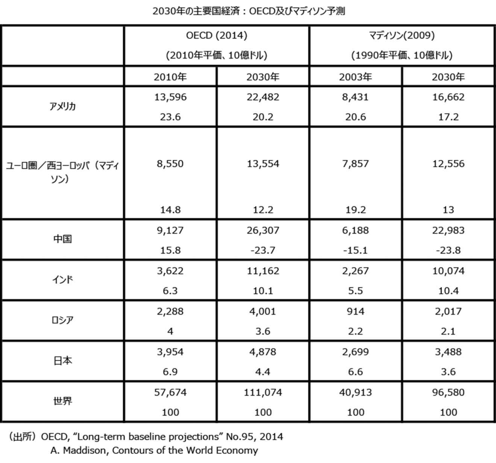

| [明治150周年記念] 名著から問題を読み解く! 明治から日本の未来を考える (10) 明治とその遺伝子[2] (impress QuickBooks) | |
| 平田 周三 | |
| 株式会社インプレス (2018) | |
目次
水野和夫 著
中島岳志 著
白井 聡 著
森嶋通夫 著
西川 潤 著
閉じてゆく帝国と逆説の21世紀経済
水野和夫 著
集英社
2017年5月
ISBN：9784087208832
目次紹介
第１章 「国民国家」では乗り越えられない「歴史の危機」
第２章 例外状況の日常化と近代の逆説
第３章 生き残るのは「閉じた帝国」
第４章 ゼロ金利国・日独の分岐点と中国の帝国化
第５章 「無限空間」の消滅がもたらす「新中世」
第６章 日本の決断――近代システムとゆっくり手を切るために
原著者紹介
水野和夫 (みずの・かずお)
水野 和夫 氏は、現在、法政大学教授、経済学博士。早稲田大学政治経済学部卒業、同大学大学院経済学研究科修士課程修了、埼玉大学大学院経済科学研究科博士課程修了。三菱UFJモルガン・スタンレー証券チーフエコノミスト等を経て、2010年、民主党政権の内閣府大臣官房審議官に就任。2013年、日本大学国際関係学部教授、2017年、法政大学法学部教授に就任して現在に至る。マクロ経済、国際金融を文明史論的な視野から見た著作で知られる。1953年愛知県生まれ。
著書には、『100年デフレ』(日本経済新聞社)、『人々はなぜグローバル経済の本質を見誤るのか』(日本経済新聞出版社)、『世界経済の大潮流 経済学の常識をくつがえす資本主義の大転換』(太田出版)、『世界史の中の資本主義：エネルギー、食料、国家はどうなるか』(東洋経済新報社)、『資本主義の終焉と歴史の危機』(集英社新書)などがある。
要旨
資本主義と国民国家の終焉、すなわち「ポスト近代」の始まりの兆候が次第に顕著になってきている。近代とは、「中心」が「周辺」から資本を蒐集 するシステムである。それを持続させるためには、常に周辺の拡大、「無限の空間」を必要とする。近代は、その空間を地中海世界から世界の七つの海に広げることで「蒐集」の空間を広げ、植民地帝国時代を実現した。20世紀初めにはすでに空間的限界に近づいていたが、二度の大戦がそれを延命させた。
第二次世界大戦後は、国内に戦禍を受けなかったアメリカが、かつての大英帝国にとって代わり、米ドルが世界市場を支配した(ブレトンウッズ体制)。しかし、アメリカがそれを支えきれなくなり、1971年、ニクソン大統領がドルと金の交換の一時停止を発表した。そのとき空間はすでに限界に達し、資本主義の終焉が始まっていたのである。
アメリカの深刻な赤字が続く一方、日本と西ドイツの経済発展はめざましかった。日本と西ドイツがアメリカの財政を支えた。そうした中、アメリカはITの発達によりインターネットという新たな電子空間を発見したのである。しかし、国境を持たぬインターネットは、国民国家、民主主義の存在を危うくした。それは「実物投資空間」ではない。資本主義と国民国家の分裂が始まり、国民を無視する資本主義は中産階級を消滅させはじめた。
アメリカは「金融・資本帝国」になり、グローバリゼーションにより、世界からマネーをウォール街に蒐集するシステムを築いた。しかし、それもまたリーマンショック以降、勢いを弱めている。一方、ヨーロッパでは陸という「閉じた空間」の中で生きることをめざすEUというシステムを構築した。
新たなフロンティアを求めて拡大を続けた近代が、ここにきて、「閉じた空間」に移行しはじめたと考えるべきだ。それは、「中世化」を意味するものでもある。「中世化」の現象は、すでに人口減少や金利低下、世界的なデフレ傾向を特徴とする経済成長の低下に見ることができる。西ローマ帝国滅亡から数えて、いまわれわれは四度目の「歴史の危機」を迎えている。EUにしろ、ロシア、中国の帝国化にしろ、まだ21世紀末に至る変化の過程の始まりでしかない。
100年後を予想できる人は誰もいない。しかし、今、「ポスト近代」に向かって一大変化が起きていることだけは間違いない。わが国はどうあるべきか。
著者は、「より遠く、より速く、より合理的に」をすべて反転させて「より近く、よりゆっくり、より寛容に」とすることが必要だという。「閉じた空間」の中での定常状態を維持できるシステムを発見することである。もはや成長は期待できない。未だに、金融を緩和し、インフレに誘導し、成長志向を続ける今日のわが国の政治を嗤う。
コメント
著者水野和夫氏の意見には異論もある。しかし、中世から近世を経て現代までの世界の経済的な出来事を克明に追いながらの現状の解釈は説得力がある。
日本は、明治時代、遅まきながら欧米列強に並んで、残された空間を獲得しようとし、やがて昭和に入り、欧米とその争いで衝突した。敗戦後は、世界的な復興で生じた市場を有利な固定為替レートと新技術により日本は異常な経済発展を遂げることができた。しかし、そのときすでに「実物投資空間」は限界に近づいていた。その象徴的出来事がバブル崩壊だった。その意味では、もはや明治に始まったわが国の近代は終わろうとしているといえよう。今、私たちは、明治維新を始めた先駆者らと同じように、この国の未来を考えなければならない。
縮約
１．「近代の終焉」
空間的限界
イギリスの歴史家ジョン・エルスナーとロジャー・カーディナルは、「社会秩序それ自体が本質的にコレクティヴ(蒐集 的)であり、それが西欧文明である」とした。「蒐集」の対象は、最初は土地だったが、13世紀初頭からは土地よりも圧倒的にコストがかからない「資本」を蒐集することに変わっていく。
資本は自己増殖を続けるために、常に利潤を求めて新たなフロンティアをつくり出そうとする。「蒐集」の範囲を拡大するため、16世紀には、「陸」から「海」への大転換が起きた。
大航海時代が始まり、それまでの閉じた狭い「地中海世界」から、「無限」と思われた「海」へと関心が移った。「陸の時代」を支配したスペイン世界帝国の「地中海資本主義」は終焉を迎え、より広い海に飛び出したオランダ、七つの海すべてを支配したイギリスがリードする「海の資本主義」へと時代は移ったのである。
狭いヨーロッパの国々は、ヨーロッパ世界の外側にある「無限」の「実物投資空間」を発見し、新たに資本を「蒐集」するシステムを発見した。アフリカ、中南米へと進出し、やがて彼らの目はアジアへと向けられた。
しかし、地球上に「無限空間」はない。20世紀に入り、資本主義はフロンティアを失った。第一次、第二次世界大戦による破壊によって、資本はその復興で「蒐集」を新たにすることができたが、国内に戦禍を受けなかったアメリカがイギリスに代わり七つの海を支配した。その中で、ヨーロッパと日本は第二次大戦後の復興を成し遂げ、資本蒐集の競争に参加したのである。しかし、資本が求める余裕の空間はもはや残されていなかった。
現実に、空間的限界に到達したのは1970年代だった。アメリカは金本位制を捨てざるをえず、ニクソン・ショックが起きた(1971年)。これが引き金となって、戦後の世界秩序を決めたブレトンウッズ体制は2年後に崩壊した。アメリカはヴェトナム戦争にも敗北(1975年)。ちょうどその頃、アメリカではIT革命が芽を吹きはじめていた。それは情報革命をもたらし、インターネットという新しい「電子・金融空間」をつくり出す基礎となった。
グローバリゼーションを押し進めるアメリカは資本蒐集の新たな道を開き、資本をウォール街に集中することに成功した。しかし、それもリーマン・ショック(2008年)で躓いた。再び、資本のフロンティア拡大に暗雲が垂れこめた。いよいよ資本主義は終焉の危機を迎えることになる。
超低金利の時代
日本の10年国債の利回りは、1997年に2.0%を下回り、すでに20年になる。2016年にはマイナス金利も経験した。今日では、2.0%という水準を高いと錯覚してしまうほとだが、これまでの金利の歴史の中で、長期金利が2.0%という水準を複数年にわたって切ったことは一度しかない。
それは、中世から近代への移行期、1611～21年のイタリア・ジェノヴァのみである。歴史家フェルナン・ブローデル(1902-85年)は、これを「長い16世紀」(1450～1650年)と呼んだ大転換期のさなかに起きた。この超低金利は、歴史の大転換を意味するものだった。
このイタリアの低金利時代を、利子率でも期間でもはるかに凌駕する現在の状況は、「長い21世紀」(1970～)と呼ぶにふさわしい。それは大転換期に私たちはいるというサインと考えるべきであろう。
資本利潤率の近似値である長期金利が2.0%を下回った状態では、資本を投下しても利潤を獲得することはできない。主要国で低金利が続く理由は、もはや資本が「より広い空間」を見出せないからである。新たなフロンティアを見つけることができなければ、資本主義は終わりとならざるをえない。
国家と資本主義
ピケティが『21世紀の資本』で分析したように、1910年から1970年までは、国家が資本をコントロール下に置くことができた。その理由は、二度の国家総動員となった世界大戦と、その後の米ソ冷戦構造があったからである。
一方、近代国家は、教育を通して、中産階級を生み出すことに努力してきた。高い教育や技能を身につけた国民が産業に従事すれば、生産性は上がる。資本主義にとって生産性の向上は利益を増やす重要な条件である。かくして資本主義は民主主義(国家)と結婚した。しかし、円満な結婚生活を送るためには、経済成長の持続が不可欠である。逆に言えば、経済成長が止まれば、民主主義と資本主義の両立はできなくなる。その転換点となったのが、1973年のオイル・ショックだった。
古典派経済学の中心となったフランスの経済学者ジャン=バティスト・セイ(1767～1832)は、「セイの法則」を打ち立てた。一言でいえば、「モノをつくれば、つくった分だけ売れる」という理論である。「モノをつくって売ることで、人は所得を得る。その所得は、モノの消費に向けられるから、生産額と消費額は等しくなる」というのである。しかし、この法則が成り立つには、つねに市場が膨張する必要がある。
ひとたび市場膨張が止まれば、生産過剰が生じるのは当然である。にもかかわらず、今なお、主流派経済学は「セイの法則」を信奉し、貨幣を供給すればインフレが起きて需要が伸びると確信し、政府も成長戦略に固執する。
「セイの法則」が成立しなくなれば、資本主義と民主主義の結合は破綻する。このことを忘れて成長を追い求めれば、そのツケは民主主義の破壊、中産階級の崩壊となって現れてくる。もはや、民主主義と資本主義は、相互に補完的な役割を果たせなくなったのである。
グローバリゼーション
国家との縁を切った資本主義は、グローバリゼーションへと向かった。IT革命は「より遠く、より速く、より合理的に」を加速させ、それを助けた。
一般的に、グローバリゼーションとはヒト、モノ、カネが国境を越える自由な移動であるといわれるが、なかでも最も容易に国境を越えることができるのはカネである。本質的にはグローバリゼーションは、中心に富(資本)を「蒐集」する、資本が自らのためにつくったシステムである。
しかし、グローバル化の勢いも、その最盛期だった2007年以後、大幅に低下している。アメリカに流入・流出する国際資本は、2007年に対GDP比で26.6%もあったが、2016年1～9月期には8.8%(年率変換)へとおよそ1/3にまで下がっている。これはグローバリゼーションのスタート時点(1982年)とほぼ同じ水準である。
金融だけではない。貿易量をみても、世界全体のGDP比で見ると、2008年をピークに減少傾向にあり、ヒトの国境を越える移動も鈍化している。アメリカへの移民は、2006年の126.6万人から2014年には101.7万人に減った。
２．国民国家と資本主義の分裂
歴史の危機
紀元370年代に中央アジアからフン族が黒海の北岸に居住していた東ゴート族(ゲルマン民族の一派)を襲い、ゲルマン民族の大移動が始まり、豊かなローマ(中心)に侵入したことで、西ローマ帝国システムが崩壊した。当時、西ローマ帝国は、もはやこれ以上空間的拡大ができない状態にあった。
「中心」に「周辺」が入ることにより、支配システムはもはや維持できなくなる。これが第一の「歴史における危機」だとすれば、第二の危機は「長い16世紀」のときに起きた。スペイン帝国による地中海を中心とする「陸」の支配がすでに空間的限界に達していた。この危機はオランダとイギリスが「海」という空間を発見することで、解決することができた。
三度目の危機は、フランス革命以降、国民が新たに市場に参入したことによって国内市場が非連続に膨張し、一方植民地主義により海外市場も拡張させたことで乗り越えた。
これら過去三回の「歴史の危機」に共通するのは、発展する空間が限界に達し、「中心」が「周辺」の侵入を許したとき、新しい空間の発見により、膨張が継続され、「周辺」から「中心」への「蒐集」が復活するということである。
その意味において、いま私たちが直面している第四の「歴史の危機」もまた原因を同じくしている。空間は無限ではありえない。「歴史の危機」とは秩序の崩壊なのである。
しかし、今回の危機ははるかに深刻である。もはや「新しい空間」を発見することができそうもないからだ。二度の大戦により国民国家は資本主義を下に置いてコントロールして危機を遠ざけることができたが、世界が戦後復興を成し遂げ、再び「中心」が崩れそうになったとき、アメリカ資本主義は新たな空間「電子・金融空間」をインターネットの世界につくり上げることに成功した。
だが、それは国民主権国家(民主主義)と資本主義の調和的秩序を崩壊させることを意味した。
国民国家の崩壊の始まり
本来的には、国民国家と資本主義は両立の難しいシステムである。すでに述べてきたように、技術革新をもとに自国の経済成長をめざす国民国家と、生産拡大を必要とする資本主義の利害の一致から、両者は補完し合いながら調和を保ってきた。世界大戦は資本主義にとって有利にはたらいたが、総力戦には国家あげての支援が必要だった。
しかし、1971年の象徴的な出来事ニクソン・ショックは、そのバランスが崩れるスタートとなった。その時から、国民国家は、資本の家来になった。資本主義の独走が始まった。空間の膨張が不可欠な資本は、「電子・金融空間」を見つけ、インターネット時代をつくり出した。インターネットにはもはや国家も国境も意味をなさない。
国民国家の崩壊が始まった。国家の保護を失った国民は、資本主義の餌食となり、不平等格差が広がり、中産階級が消滅へと向かうのである。
「非公式帝国」の出現
1970年代後半に、国民国家と資本主義の限界が明らかになったとき登場してきたのが、アメリカ金融・資本帝国とEU帝国である。ここで言う「帝国」は従来の公式の「帝国」の意味ではない。
ジョン・ギャラハー(1919～80年)とロナルド・ロビンソン(1920～99年)は、「非公式の帝国」という言葉を用いた。この考えを発展させたマイケル・ドイルによれば、「公式の帝国」が「併合による支配と植民地総督の下での統合」を意味する。それに対して、「非公式の帝国」は「法的には独立した周辺政権の対内的・対外的政策に対して、従属的な周辺エリートへの買収や操縦により間接的に支配を及ぼす」存在と定義している。
アメリカ金融・資本帝国とEU帝国という二つの「非公式の帝国」を、「帝国」という視点から見ることによって、私たちが近代とポスト近代の過渡期に立ち会っていることを理解できる。つまり、この二つの帝国は、近代の限界とポスト近代の条件を示唆するものなのだ。
アメリカ金融・資本帝国が完成したのは1995年である。この年に国際資本の完全自由化が実現し、ルービン財務長官によって「強いドル政策」が打ち出された。1971年にニクソン大統領がドルとのリンクを断ち切って以来のドル安から、一転、ドル高に舵を切り、世界中のマネーをアメリカに集中させた。
一方、ヨーロッパでは、1979年に欧州通過制度(EMS)の導入に踏み切り、1992年のマーストリヒト条約によってEUが創設され、1999年にはユーロを導入、通貨統合を果たした。
アメリカ金融・資本帝国
利潤を得るための「実物投資空間」は「無限」ではなかった。私たちは中世から近代への転換が起こって以来、それが無限であるという幻想を抱き、信じてきた。しかし、それが幻想に過ぎないことが、21世紀になってあらわになった。
アメリカは、ITを駆使し、金融のグローバリゼーションを通じて、各国に金融の自由化や規制緩和を強制的に導入させ、他国の貯金で自国の経済がまわるような仕組みを構築した。これは内政干渉をしながら、世界の富をウォール街に集めるための帝国である。
しかし、グローバル空間もまた無限ではない。「周辺」の「中心」への同化が起こり、アメリカの「周辺」に対する支配力は弱まっていく。アメリカ企業の利益の中で金融部門が占める割合も、2002年には30.9%を占めていたのが、2016年には22.7%に落ちた。このことは、もはやアメリカ自身がグローバリゼーションの「中心」を担えなくなっている証拠である。
EU帝国
「EU帝国」は、「実物投資空間」の上で成り立つ「陸の帝国」である。アメリカの金融・資本帝国が「電子・金融空間」を基盤とする「膨張する帝国」であるのに対して、EU帝国は一定の地域に限定された「閉じた帝国」である。近代の延命を図るアメリカ金融・資本帝国は、世界の隅々まで網をかけて、利益を吸い上げようとしている。それに対してEU帝国は、世界全体に拡大する意図はもともとない。
「海の国」が「陸の国」に勝利することで近代の幕が開いた。しかし、EU帝国の出現は、ポスト近代の今、再び「海」から「陸」に移る可能性を暗示しているように思われる。アメリカ帝国が基盤とする「電子・金融空間」とは違い、「実物投資空間」は土地の上に存在しており、利潤はおおむね働く人たちに還元される。国民への還元が少ないアメリカ帝国とはそこが大きく異なる。
しかし、EU帝国も多くの問題を抱えている。ギリシャ危機にみられるように、経済的にはドイツの一人勝ち状態になっており、EU域内の雇用問題はアメリカよりも深刻である。加盟各国にそれぞれの問題があっても、EU本部のブリュッセルの官僚たちが決定する政策によって、加盟国の主権が制限され、国家として身動きが取れなくなっている。そのことに加盟国の国民は不満を蓄積している。
北の加盟国であるドイツ、フランスが、南の加盟国であるギリシャ、イタリア、ポルトガル、スペインから収奪して利潤をあげているとする「ユーロの南北問題」も存在する。
３．「閉じた帝国」
中世的現象
「閉じた空間」で思い出されるのは中世社会である。その「有限空間」を「無限空間」に変えたのが近代であった。今再び、「閉じた空間」の時代に戻るというのは、中世的現象としてとらえることができるのではないか。そういう目で世界を見渡すと、すでにいたるところに「中世的現象」が発生していることがわかる。
現代の先進各国における人口減少は、まさに中世的現象である。中世(500～1500年)の人口増加率は年0.08%であり、1000年にわたって人口はほとんど増加しなかった。世界の人口増加率は、2015～50年には年0.8%、そして21世紀後半には年0.28%しか増えないと予想されている。アフリカを除いた場合の人口増加率はマイナス0.12%という予測もある。
先進各国の経済の長期停滞、ゼロ成長も実に中世的である。中世も、長期に均 してみれば実質的にゼロ成長の時代だった。西ローマ帝国が滅んだ直後から中世が終わるまでの間の世界の一人当たり実質GDP成長率は、わずか年0.03%だった。1000年間を通じても1.35倍にしかならない。中世の経済は、成長しない社会だったのである。
再び「陸の国」の時代へ
中世の時代は、「陸の国」の時代だった。そして今、イギリス、次にアメリカが牽引してきた海を中心とする近代資本主義が、フロンティアの消滅とともに機能不全に陥り、21世紀以降、ユーラシア大陸に位置する国々が、政治的にも、経済的にも影響力を増している。EU帝国のほか、ロシア、中国の台頭もそれを裏づける。ロシアも中国も、かつてのロシア帝国や清帝国がそうだったように、「世界帝国」をめざしているわけではない。やはり「閉じた帝国」というべきである。
といって、中世回帰にも多くの弊害が待ち受けている。国際的なテロの常態化は、国民国家の弱体化を意味し、閉じた帝国の領域を越えるその外には多くの危険が存在するのは中世では当たり前のことだった。地域帝国の外には、多くの危険が潜む。「より遠く」をめざすビジネスにとって、これまでにない大きなリスクを覚悟しなければならない。
帝国内部では、縁故資本主義(クローニー・キャピタリズム)の横行が目立つようになった。かつてはアジアの悪しき習慣とされる同族優遇を意味したが、今では欧米などのグローバル企業がその影響力を駆使して、政府に対して自社に有利な税制や規制緩和を働きかけることが富の集中の原因にあげられるようになった。市場に任せろと主張し、自助努力を求めた近代社会が、中世身分社会と同じような状況を呈してきているのである。
無限の膨張が不可能なことが明らかになったポスト近代システムは、一定の経済圏で自給体制をつくり、その外に富(資本)や財が出ていかないようにすることが必要である。その条件を満たすには、「閉じてゆく」ことが不可欠になる。
「閉じた帝国」の中では、自給自足が重要となる。政治体制としては、安全保障や外交、環境問題への対処など、一国単位の主権で行うのが難しい事柄を帝国の共同体で対応し、人々の生活や企業活動は国家より小さな地方を単位とする経済圏が管理することになろう。
４．中国の狙いと可能性
中国の帝国化
中国の「一帯一路」構想は、陸の道と海の道の両面から自らの経済圏を拡大しようというものである。一帯とは、中国から中央アジアを経由して欧州まで伸びるシルクロード経済ベルトであり、一路とは、中国沿岸部から東南アジア、インド、中東、アフリカ、欧州に至る海のシルクロードともいうべきルートである。
そのための資金源が、2014年から2015年にかけて設置されたシルクロード基金やAIIB(アジアインフラ投資銀行)である。AIIBは、アメリカ、日本、メキシコ、アルゼンチンを除き、全世界から計57カ国が参加することになっている。
1990年代にアメリカが世界のマネーをウォール街に集めて繁栄を謳歌したように、人民元をアジアの基軸通貨に据えてマネーを中国に集める経済圏をつくる雄大な構想であろう。まさに新しい中華帝国の出現である。
ユーラシア大陸に、EU帝国、ロシアと並んで、中国が経済覇権を握ろうと乗り出してきた。しかし、これの実現には多くの難問がある。
いくら中国が「一帯一路」で新経済圏を確立しようとしても、有限の空間が新たな需要を急激に拡大することはできない。では、EU帝国と中国とは、どのような違いがあるのか。近代を始めたばかりの中国には、まだ中産階級が主体となる社会ができていない。それを実現する前に近代＝成長の時代が終わってしまう可能性が高いのである。
地政学的には、陸の道「一帯」には政治の混乱が続くイスラムの存在があり、海の道「一路」は南シナ海の領有権問題があり、国際世論の反対も強い。目的地の最終地点は「最後のフロンティア」といわれるアフリカがあるが、あまりに遠く、貧困と政治不安は十分な経済活動を阻む。
これ以上に深刻な問題は、中国が現在直面する経済の実情である。とりわけ大きな足かせとなっているのが過剰生産力である。
帝京大学の郭 四 志 教授は、鉄鋼、石炭、セメント、電解アルミ、板ガラスの五産業でその過剰能力が際立っており、中でも、鉄鋼と石炭産業の過剰は深刻化して、稼働率はわずか6割程度だと指摘している(『中央公論』2016年6月号)。
中国の粗鋼生産量は2015年で8億382万トンなので、世界の49.6%を占める。それでも60%程度の稼働率であるということは、過剰生産設備のすさまじさが想像される。
中国の過剰生産力は、粗鋼などの素材産業にとどまらない。加工産業の代表である自動車においても顕著である。中国自動車産業では、2015年の総生産能力は、前年より2割以上多い約5000万台に増える見通しであるが、同年の新車販売台数は2460万台でしかない。
過剰生産設備は、日本およびドイツで深刻な問題となったが、中国はそれを上回る厳しい状況に立たされている。しかも、当時の日本、ドイツと違い、世界市場の需要がひどく低迷しているこの時期である。
異常なまでに増大した生産力を満たす需要は、世界経済が縮小に向かっている現在、中国はこれ以上輸出主体の経済を続けることは難しい。そうなれば内需主導の経済への転換が必要となるが、近代を始めたばかりの現在の中国にはそれは無理である。海外にも国内にも、過剰な生産能力を満たす需要が期待できなければ、固定資本投資の回収は不能となり、やがて経済全体が崩壊するのは目に見えている。おそらく2012年に経済成長率が8%を切った時点で、中国の経済モデルは維持できない状態に陥っていたに違いない。
中国がなぜこれほどの生産能力を持つようになったのか。1979年のアジア通貨危機以降、ヨーロッパと日本の過剰な貯蓄がウォール街に集まり、アメリカの株価が上がり、投資家はリスクを取れるようになった。そこで、投資マネーは中国に向かった。アジア通貨が危機に陥ったとき、中国は人民元を安くして輸出競争に乗り出すことがなかったため、他のアジア諸国と比べて相対的に中国に対する評価が高まっていったからである。こうして集まった世界中のマネーを元手に、「世界の工場」をめざし中国は生産設備の拡充に当てた。しかし、まだ内需が拡大していなかったため、過剰生産力を積み上げていくことになった。
中華帝国は実現するか
2015年に起きた不動産・株価下落のチャイナ・ショックは、バブル崩壊後の日本経済に近いプロセスをたどっていくであろう。アメリカで起きたリーマン・ションクと異なり、短期間で一気に信用不安に達するものではなかった。地価の下落によるバブル崩壊は、小手先の先送りが可能なため、すぐには表面化しない。日本はバブル崩壊後、その処理が終わるまでに10年以上かかった。中国経済への影響が現れるのはこれからなのである。
中国は、やがて日本と同様に、バブルの処理過程の後に深刻なデフレに陥るとみられる。これまでの歴史をみれば、実物経済の中心が先進国から新興国へ移行する過程で、新興国ではインフレが起き、キャッチアップが終わると、今度は新興国もデフレに変化している。
「長い16世紀」のときも、当時の先進地域だったイタリアやスペインなどがデフレに転じた後、「海」を支配した新興国のイギリスは、最初にインフレとなり、その後約50年遅れてデフレを経験した。グローバリゼーションが進んだ現代では、新興国のキャッチアップが速くなっていることから、日本でデフレが始まった1997年から四半世紀を経て中国がデフレに転じてもおかしくない。
中国の消費者物価は、2011年には前年比5.4%増だったが、2016年には2.0%増にまで鈍化している。近代化の最後の国、中国がデフレになるとき、資本主義はその最終局面に入ることになるだろう。そのときに発生するバブル崩壊の衝撃の大きさはいかほどのものか。
５．日本はどうあるべきか
分岐点となったプラザ合意
第二次大戦後、アメリカは、米ドルを基軸通貨として、ドルに対して他国通貨を固定相場で連結する金ドル本位制(金1オンス＝35ドル)を採用した。戦後復興を遂げた日本や西ドイツ(当時)の企業は、有利な為替レート(日本の場合1ドル＝360円)のおかげで国際競争力を高め、対米輸出が飛躍的に伸びた。
1971年のニクソン・ショックの後、アメリカの貿易赤字は膨らんだ。1980年代に入ると、レーガン大統領によるスター・ウォーズ計画などによる軍事費拡大がアメリカの財政をさらに圧迫した。
このアメリカの膨大な財政赤字を支えたのが、巨額の貿易黒字国の日本とドイツで、米国債を買い支えた。さらに財政赤字を減らすための打開策として、1985年にG5(米、日、西独、仏、英)のプラザ合意によりドル安に向けた協調介入が行われた(これにより、当時、240円であった為替レートは、1987年には140円台に到達した)。
続いて1987年には、進みすぎたドル安に歯止めをかけるため、日本とヨーロッパに対して、今度は利上げを回避することをアメリカは要請した。これがルーブル合意である。この合意を守るために、利上げすべきときに利上げできなかった。日本では、バブルがさらに加速した。1987年2月末の日経平均株価は27,766円だったのが、1989年12月末には38,915円まで急騰したのである。
しかし、アメリカの対ソ冷戦の勝利がほぼ確実となり、ソ連の脅威が遠ざかると、年を越した大発会の市場で、外国人投資家の主導による日本株売りが始まり、バブルが崩壊した。日本は財政苦境のアメリカを支えたあげく、あっさりと捨てられたのである。「平和の配当」を受け取ることもなく、バブル破裂後の「失われた20年」に苦しむことになった。
プラザ合意を実行し、ルーブル合意によるアメリカの要請にも協力した時点で、日本はアメリカ金融・資本帝国の傘下に入ることを決めたのである。
日本はルーブル合意に同意し、忠実に守ったが、西ドイツは対照的に、この合意に反して半年後には国内のインフレ対策として利上げを実施した(1987年9月)。この西ドイツの利上げがアメリカ経済をゆさぶった。ブラック・マンデーが起きたのは同年10月19日である。
アメリカ「金融・資本帝国」を拒絶した欧州
ルーブル合意に反抗した西ドイツは、冷戦終結とともに、アメリカ帝国を離脱し、電光石火のごとく政治的なカードを切って、自ら「帝国」の中心となることを選択していった。
1989年11月のベルリンの壁崩壊の翌年10月には東西ドイツの統合を実現した。統合の条件として、東ドイツマルク10に対して西ドイツマルク1の交換比率が経済力の比較から妥当だとされていたが、1対1の等価交換で合併した。この決断は、経済的観点からではなく、政治優先で行われたものだった。
ソ連崩壊から3カ月もたたない1992年にはマーストリヒト条約を締結して、EU誕生をほぼ決定的なものにした。強い通貨マルクを捨ててユーロを誕生させたのは、時代の潮流を読み解き、この機をずっと待っていたからであろう。
ドイツをはじめ欧州には、ドル基軸体制をはじめとするアメリカの外交・経済政策への不満がくすぶっていた。ニクソンのドル金本位制廃止のきっかけをつくったのも、フランスの大統領ド・ゴールのゆさぶり(ドルの金への変換要求)があったからである。
エネルギー収支比率の低下
石油を筆頭に化石燃料の枯渇が問題にされて久しい。次々と新油田が発見され、シェール・オイルの採掘技術が完成し、再生エネルギーもあり、問題はないとする楽観論が優勢である。しかし、問題なのはエネルギーの収支比率である。
エネルギー収支は、1単位のエネルギー投入で何単位のエネルギーを獲得できるかを表す。1930年代には、1単位の原油(エネルギー)を投入して採掘をすれば、100単位の原油を獲得することが可能だった。つまり、獲得できた100単位のエネルギーのうち1単位だけを次の採掘のために確保しておけば、残り99単位は自由に使うことができたのである。
ところが、1970年代には、1単位のエネルギー投入で採掘できるエネルギーは30単位にまで下がり、2000年には11単位にまで低下した。シェール・オイルをエネルギー危機を救う切り札として期待する人は多いが、エネルギー収支比は2.0に近いのである。エネルギー収支比が10以下になると、もはや化石燃料は成り立たなくなる。これに代わる再生エネルギーのエネルギー収支比も低い。
エネルギー価格が高騰すれば、遠くにモノを運び、人の移動が難しくなる。エネルギー問題からも、「より遠く、より速く、より合理的に」の近代システムは困難になるのである。
アメリカの今後の動き
アメリカではトランプ大統領が「強いアメリカ」を演出し、公共事業拡大路線を実施、市場は沸き立っている。これが数年続けば、レーガン大統領のレーガノミクス(軍事費増強で国内需要を刺激し、片方で富裕層減税を行う)と同様、再び財政赤字を膨らませ、国債は悪い金利上昇を迎える可能性が高い。
レーガンのときは、その失敗のツケを他国、とくに日本に回した。レーガン政権はわが国に内政干渉し、それ以来、アメリカ金融・資本帝国の配下に入ることになった。しかし、米ソ冷戦が終わったとたんに、アメリカ財政のファイナンス役の日本はご用済みだとばかりにバブルが崩壊した。
今後、「アメリカ・ファースト」のトランプ政権は、日本に対して、これまで以上に圧力をかけてくるに違いない。
日本の選択
いよいよ近代システムの矛盾が臨界点に達しようとしている。資本主義が、そして国民国家の時代が終わろうとしている。新たな投資空間を拡大する余地がなくなったのである。より根源的に考えれば、西欧史を貫いてきた「蒐集」という理念が、フロンティアの消滅とともに終焉の時を迎えようとしている。
外に向かう拡大は止まり、収縮が始まる。それは、エネルギー(エネルギー収支比)の問題からも、もはや「より遠く、より速く」は成り立たなくなるのは明らかである。
といって、これが直ちに起きるわけではない。中世から近代への移行に200年かかった。近代からポスト近代への移行も100年単位の時間を必要とする。そのような遠い未来を予想できる者は誰一人としていない。しかし、やがて「ポスト近代」が訪れるのが確かであれば、いまからその方向性を探り、準備をせねばならないであろう。
「長い16世紀」と呼ばれる中世から近代への移行期に、イタリアのジェノヴァは超低金利という「歴史の危機」のシグナルを無視した。マキアヴェリの提言を受け入れず、都市国家から国民国家へと転換することを忌避したため、近代の扉を開けることができず、オランダとイギリスに主役の座を奪われた。
日本も、アメリカ金融帝国の属国の道を選び、今なお近代にしがみつこうとしている。
超低金利の時代、世界的デフレの時代には、もはや経済成長は期待できなくなる。経済圏は、「海」の時代から再び「陸」の時代への逆転が起き、「閉じた空間」が主体となろう。そのモデルを今私たちはEUに求めることができる。
日本の場合、国民国家では国際的な政治経済単位としては小さすぎるし、人々の生活単位としては大きすぎる。アジアは地域帝国になりうるだろうか。
「アメリカ・ファースト」を唱えるアメリカは、「地域帝国」にはなれない。しかし、東アジア共同体という選択肢も、中国が近代化の真っ只中にある以上、現段階では現実味がない。そう考えると、日本ができるのは「選択肢が生まれるときに備える」「選択肢ができるように環境を整える」ということだけである。
現状は無理でも、100年単位で考えれば、東アジア、あるいはアジア全体も大きく変容するであろう。その時に備えて、日本ならではの「地域帝国」のビジョンをつくっておくことは重要である。それは、アジアの中で最も早く近代化を遂げ、ポスト近代の条件を整えた日本の責務ともいえる。
「閉じた地域帝国」を実現するには、成長至上主義と決別し、定常状態への移行を遂げねばならない。そのためには、三つのハードルのクリアが必要である。
第一は、ゼロ金利のほかに、財政均衡が必要条件になる。国が巨大な債務を抱えていると、ゼロ成長下においては国債の利払いのための税負担が増加する。
第二のハードルは、エネルギー問題である。エネルギーを国産化し、自給率を高めていくことが国家的課題となる。
第三は、「地方政府」を視野に入れた地方分権である。日本をいくつかの経済圏に分け、それぞれを極力「閉じた空間」にする。「閉じた経済」の中で、できるだけ地域に密着した教育機関や企業、金融機関を充実させていく。企業利潤を人件費に還元する努力が求められる。
「新中世」へと後ろ向きに歩んでいくポスト近代の理念は、「より遠く、より速く、より合理的に」をすべて反転させて、「より近く、よりゆっくり、より寛容に」とすることが必要である。グローバル化ではなく、ローカル化である。
ホイジンガは、『中世の秋』を書くに際して準備した論文で次のように記している。「中世後期を、きたるべき時代を予告するものとしてではなく、すでに過ぎ去ったものが死滅する時季としてとらえたらどうか」と。
いま私たちは「中世の秋」ならぬ「近世の秋」を生きている。そこでできることは、過ぎ去ったものの死滅を見届け、2100年を生きる世代に希望のバトンを渡すことである。
【考察】
「近代を押し進めた資本主義が終焉の時を迎えつつある」という著者の意見には同調できる。いずれ社会は本来の姿である「定常」に向かうだろうと予測し、その結果、国家、あるいは地域的な国家集団がEUのような閉じた社会となり、いわば「中世」のような自給自足の時代が到来するのではないかと考える。では、成長ゼロの時代では、具体的に人々はどのような生活を送っているのだろうか。鎖国政策によりほぼ完全な閉じた状況にあった「徳川時代」は、それに似た社会だったのだろうか。人々の暮らしはどうなっているのだろうか。
アジア主義
その先の近代へ
中島岳志 著
潮出版社
2014年7月
ISBN：9784267019715
目次紹介
序章 なぜ今、アジア主義なのか
第１章 竹内好はアジア主義に何を見たのか
第２章 西郷隆盛と征韓論
第３章 なぜ自由民権運動から右翼の源流・玄洋社が生まれたのか
第４章 金玉均という存在
第５章 頭山満、動き出す
第６章 来島恒喜のテロと樽井藤吉の『大東合邦論』
第７章 天佑俠と日清戦争
第８章 閔妃暗殺
第９章 孫文の登場――宮崎滔天・内田良平・南方熊楠
第10章 岡倉天心「アジアは一つ」の真意
第11章 黒龍会と一進会
第12章 韓国併合という悲劇
第13章 中国ナショナリズムへのまなざし
第14章 孫文の大アジア主義演説
第15章 来日アジア人の期待と失望
第16章 大川周明の理想
第17章 田中智学から石原莞爾へ――「八紘一宇」の奈落
第18章 アジア主義の辺境――ユダヤ、エチオピア、タタール
第19章 戦闘の只中で――日中戦争と大東亜戦争
終章 未完のアジア主義――いまアジア主義者として生きること
原著者紹介
中島岳志 (なかじま・たけし)
中島岳志氏は、東京工業大学リベラルアーツ研究教育院教授。専門は南アジア地域研究、近代思想史。1999年、大阪外国語大学外国語学部地域文化学科ヒンディー語専攻卒業。京都大学大学院アジア・アフリカ地域研究研究科博士課程修了、博士号(地域研究)取得。北海道大学大学院法学研究科准教授等を経て、2016年より現職。1975年大阪府生まれ。
2005年に『中村屋のボース』(白水社)で大佛次郎論壇賞、アジア調査会のアジア・太平洋賞を受賞。2006年には『ナショナリズムと宗教』(春風社)で第一回日本南アジア学会賞を受賞している。
『パール判事 東京裁判批判と絶対平和主義』(白水社)、『中島岳志的アジア対談』(毎日新聞社)、『ガンディーからの＜問い＞―君は欲望を捨てられるか』(NHK出版)、『「リベラル保守」宣言』(新潮社)、『岩波茂雄 リベラル・ナショナリストの肖像』(岩波書店)、『親鸞と日本主義』(新潮選書)など多くの著書がある。
要旨
「なぜ今、アジア主義なのか」と、著者は自問自答する。現在のようなアジアの不幸な状況を打破し、連帯を構想すべき時期がやってきている。それにはどうしても歴史と向き合わなければならない。未来を見据えるために、いま一度、過去に遡行してみる必要がある。
中国文学者で評論家の竹内好 は、アジア主義を次の三つの類型に分類した。
(1) 政略としてのアジア主義
アジア諸国を日本の安全保障のための政略的な空間とみなしたり、資源獲得の場と考えたりする立場
(2) 抵抗としてのアジア主義
国内の封建制や国際的な帝国主義によって苦しめられているアジアの民衆を救わなければならないという義勇心で、アジア主義の初発の論理
(3) 思想としてのアジア主義
近代の超克という問題を含み込む東洋哲学の発露で、西洋近代の存在論や認識論を批判し、東洋の側から「不二一元」的な世界観を提示する潮流
「政略としてのアジア主義」は、軍部を中心勢力としてアジア侵略を行い、終に悲惨な敗戦をもたらした。その一方、アジア諸国が西洋の植民地となり、搾取されている実状に憤慨し、同情し、独立と開化が必要だと考える「抵抗としてのアジア主義」があった。しかし、「抵抗としてのアジア主義」には、任俠はあっても、思想を欠いていた。
「思想としてのアジア主義」は、岡倉天心の『東洋の理想』で開花した。「アジアは一つ」とする思想は、さまざまに違いを見せるアジア諸国の文化は、本来一つのものが多様な姿を表わしているのであり、アジアという一つのものは、多様性からできているというものである。それはインド哲学の「不二一元」(アドヴァイタ)の世界観だった。
日本では、哲学者・西田幾多郎 が説いた「主客一致」から生まれる「無」の世界こそが東洋であるとする思想が、京都学派を中心にアジア主義思想の中心をなしていた。それは、天心と同じ思想の流れであり、「多一論」として世に知られた。しかし、「思想としてのアジア主義」の弱点は行動を伴わないという点にあり、結局、思想を欠く「抵抗としてのアジア主義」ともども、「政略としてのアジア主義」、日本帝国主義に取り込まれてしまったのである。
戦後、アジア主義は、帝国主義と結びつけられ悪として葬られた。しかし、次の時代を考えるとき、もう一度、アジア主義の思想的可能性を考える必要がある。
コメント
EUになぞらえて、アジア経済圏を将来のあるべき姿だとする考えが強くなっている。しかし、現実を見れば、アジア各国の主張は異なり、政治思想にも違いがあり、過去の歴史的出来事への恨みや反発も根強く残っている。西洋と東洋という区別は明確にできる。しかし、さればその実体は何かと問われれば、答えに窮する。著者中島岳志氏が過去を振り返り、アジア主義とは何かという問いに対して得た答えに、耳を傾けてみよう。
縮約
１．なぜアジア主義なのか
大学時代の読書遍歴とアジアへの目覚め
私(中島 岳 志 )は、1994年に大阪外国語大学(現在の大阪大学外国語学部)に入学、ヒンディー語を専攻するが、とくに展望があったわけではなく、授業が苦痛で、ヒンディー語の履修を放棄し、日々、大学の図書館でひたすら読書する生活を始めたのだった。そこで出会った思想が、「保守思想」と「仏教」だった。
どちらも、人間の不完全性を直視し、理性の限界を謙虚に受け止めようとする思想である。この両思想の理性の限界という問題と出会ったことで、現代社会が直面している課題の中心は、理性万能主義からの脱却によってこそ見えてくるのではないか。そう思ったとき、それがアジアへの扉が開かれた瞬間となった。
朝早くから夕方までの読書は、さまざまな世界との出会いの連続だった。特に、仏教思想を基にした西田幾多郎 の哲学に心を奪われた。「絶対矛盾的自己同一性」といった哲学用語は、はじめはちんぷんかんぷんだったが、徐々にその意味するところがわかり始めると、西田哲学にのめり込んでいった。
西田をはじめとする京都学派の哲学は、「無」という観念を重視する。人間のはかなさと無力を謙虚に受け止め、我に対する執着を捨てたとき、私たちははじめて絶対的なものに包まれた「我」として存在することに気づく。
西田の盟友・鈴木大拙 は、西洋の主客を分離した認識論(西洋では、＜主体＞である人間の理性が、対象となる存在を＜客体＞として一方的に認識する)に対し、「東洋的見方」は、物のまだ二分しないところから、考え始める思考様式であり、主客が分離しない「主客一致」の状態において成立する認識と考えた。
近代の祖・デカルトは「我思う、故に我あり」と言ったが、東洋の伝統思想では「我無し、故に我あり」なのである。そのことを知ったとき、私の世界観は大きく変わった。そして、アジアと出会うことになった。
問題は何か
「アジア」という空間の定義が問題だった。どこからどこまでがアジアなのか。津田左右 吉 は、『支那思想と日本』(岩波書店 1938)で、「東洋」が特定の統一性を持った文化的空間としての存立根拠を欠いていることを指摘した。中国とインドの文化はそれぞれ独自に発展したもので、両者をひと括りの文化として捉えることは不可能であると主張した。
本当に「アジアは存在しない」のか。この問題に正面から応答したのが、京都学派の三木清だった。三木は津田の議論を取り上げ、その論旨を概ね肯定しながらも、「それでもアジアは存在する」と主張した。バラバラに見えるアジア諸国の文化の根底を見つめていけば、そこに共通する「無という思想」が存在し、それこそが西洋近代を乗り越えるために重要な思想的根拠だとした。
「アジアは一つ」だとする議論は、20世紀初頭にすでに岡倉天心によって展開されていた。彼は『東洋の理想』という本を書き、インドと中国はヒマラヤ山脈によって二分されてはいるが、「究極と普遍を求めるあの愛のひろがり」を共有するとし、それこそが「特殊的なものに執着し、人生の目的ではなく手段を探し求めることを好む」ヨーロッパの諸民族とアジアを区別する所以であると主張した。
天心の言葉に、「やはりアジアは存在する」という思いを強くした
しかし、同時にこのような思想が、アジアに対する日本帝国主義の論理に転化されていった。「アジアは一つ」というスローガンが、「大東亜共栄圏」の思想に結びつき、アジア諸国への侵略を推し進めていった事実から目をそらすわけにはいかない。
「アジア主義とは何か」。その根底には磨けば輝く思想の原石が存在する。その原石こそが、21世紀のわれわれが直面する問題に、さまざまなヒントを与えてくくれる存在であると確信している。
未来を見据えるために、いま一度、過去に遡行してみる必要がある。
竹内好が見たもの
アジア主義を議論する際に、どうしても外すことのできない論文がある。竹内好 の「日本のアジア主義」である。この論文は竹内が編集した『アジア主義』の解説として1963年に出版されたもので、現在は竹内好『日本とアジア』(ちくま学芸文庫)などで読める。
竹内はアジア主義の中にある重要な可能性が権力に取り込まれ、潰えていったプロセスを直視する。
竹内は、アジア主義を次の三つの類型に分類する。
(1) 政略としてのアジア主義
アジア諸国を日本の安全保障のための政略的な空間とみなしたり、資源獲得の場と考えたりする立場
(2) 抵抗としてのアジア主義
国内の封建制や国際的な帝国主義によって苦しめられているアジアの民衆を救わなければならないという義勇心で、アジア主義の初発の論理
(3) 思想としてのアジア主義
近代の超克という問題を含み込む東洋哲学の発露で、西洋近代の存在論や認識論を批判し、東洋の側から「不二一元」的な世界観を提示する潮流
竹内にとって、大東亜共栄圏の論理は、「政略としてのアジア主義」の帰結だった。「日本政府のアジア進出がアジア諸国の独立を助けた」という歴史観は、「日本民族の恥」だとして遺棄した。明治維新を経験した日本人は、「独立は他から与えられるものではない」ということを骨身にしみて感じていた。
竹内は、「抵抗としてのアジア主義」を重視したが、アジアの民衆が連帯し、国内外の封建勢力への抵抗の闘いを進めるとしても、ではその闘いの勝利の暁に、どのような価値を実現していくべきかという「思想」や「哲学」が存在しないことを問題にした。
福沢諭吉の「脱亜論」には文明という価値があった。「抵抗としてのアジア主義」にはそれがなかった。しかし、岡倉天心は、西洋文明より高い価値の中心を「美」においた。アジア主義は天心の登場によって、はじめて「思想」を獲得したと竹内は考えた。しかし、この「思想としてのアジア主義」は誰にも継承されず、溶解していったと竹内は言う。
つまり、「抵抗としてのアジア主義」が持っていた連帯の創造力や義勇心、反功利主義が、「思想としてのアジア主義」へと結びつくことなく継承されたことに、竹内はアジア主義の可能性が潰えていった原因を見ているのである。
２．アジアを考え、行動した人々
金玉均の周囲にいた日本人
金玉均 という名前を聞いてピンとくる日本人は少ないだろう。金玉均は、明治日本をモデルに朝鮮の近代化を進めようとした「開化派」のリーダーで、甲申事変というクーデター事件を起こして失敗。その後、日本に亡命した。
19世紀後半、朝鮮では大院君 (国王・高宗 の父)と閔 妃 (高宗の妻)が争っていたが、巧みに大院君を追放し、閔妃が政治の実権を掌握した。閔妃政権は、開国を決断し、日本との間に日朝修好条約を締結した。金玉均はその中のリーダーだった。
金玉均は1851年生まれ、1872年に首席で科挙の試験に合格した。31歳のとき、金玉均は初めて日本に来た。その頃、朝鮮からの留学生の世話をしていた福沢諭吉が、自邸に泊めて、彼の面倒をみた。井上馨、後藤象二郎、大隈重信、伊藤博文、渋沢栄一ら、日本の第一線で活躍する要人らに紹介するなど、二人の信頼は高まった。
日本滞在中に、閔妃が行った軍制改革に反対する兵士による事件(壬 午 軍乱)。が起きた。旧兵士に担がれた大院君は政権の座についたが、ここで清が軍を派遣し、閔妃を救った。朝鮮での清のプレゼンスが高まった。帰国した金玉均は、清の介入を嫌い、独立国家として近代化路線を歩むべきことを主張した。しかし、開化派は中国寄りの「穏健的開化派」と日本よりの「急進的開化派」の二つのグループの亀裂が次第に大きくなり、分裂していくことになった。
開化派の立て直しを図る金玉均は、再び来日し、一定の成果を手にして帰国したが、さらなる政府の財政難に直面し、三度目の来日に踏み切った。しかし、金銭的な面での成果は上げることはできないまま帰国した。
帰国した金玉均は、事態の変化に会う。清仏戦争で清軍は駐在兵を減らし、閔妃一派を困らせていた。この機に開化派による新政権樹立を企画し、日本の支援を確認して、クーデター(甲申事変)を起こした。しかし、すぐに清軍に制圧され、結局、日本へ亡命した。日本政府は金玉均を遠ざけ、亡命生活は10年にわたるが、不遇に終わる。1894年、上海に渡り、刺客に暗殺された。
最後まで金玉均を支援したのは福沢諭吉だった。朝鮮の文明開化の難しさを痛感した福沢の落胆と失望は大きく、次第に激しい憤りへと変わる。そうした中で、有名な「脱亜論」が書かれた。
この諭吉の挫折の延長上に、本格的なアジア主義が芽生えることになった。金玉均ら開化派の日本亡命は、自由民権運動の志士たちの関心の的となり、朝鮮の開化派を支援しようという動きが拡大した。
その人脈の中に初期アジア主義を主導する玄洋社メンバーがいた。玄洋社とは、自由民権運動から派生した、日本の右翼の源流で、その中心人物は頭山満だった。頭山は金玉均に会い、その才能精神を評価し、アジア問題に関心を抱いた。
頭山は早速、資金集めに奔走するが、目標とする額には遠く及ばず、意をとげられなかった。だが、金玉均を担いで朝鮮で事を成そうとクーデターを計画する樽井藤吉ら血気にはやる連中がいた。頭山は官権の動きを恐れ、自重を促した。しかし、旧自由党のメンバーである大井憲太郎たちが計画の実行を計り、逮捕されるという大阪事件へとつながる。
この事件後、金玉均への官権の警戒の目は強まり、小笠原や北海道に逃避する身となった。
1893年、樽井藤吉の『大東合邦論』が出版された。評価は大きく分かれたが、アジア主義を議論する際、最も重要な文献の一つになっている。
日本と朝鮮が「対等合邦」することの必要性を提起し、合邦した後の国名を「大東」とするとしていた。天皇の存在が問題だったが、朝鮮にも尊敬する君主を置くことで両立を図るという考えだった。樽井は、このままでは白人に東洋が亡ぼされると危惧し、国家を超えたアジアの連帯の必要性を主張したのである。
やがて朝鮮の問題は、日清戦争へと発展し、1910年の日韓併合へと続く。
孫文の周囲にいた日本人
孫文は、日清戦争が終わった後の1895年、革命を期して広州で蜂起した。しかし、計画が事前に漏れ、蜂起は失敗に終わる。孫文は日本に逃れた。再起を図るための資金集めに、ハワイ、アメリカ、ロンドンと拠点を変えながら奔走した。
日本に戻っていた孫文を宮崎滔天 が訪ねた。滔天の兄と親しい仲だった陳少白(孫文の下で広州蜂起に参加、敗れて孫文と共に日本に逃れた)の紹介だった。
滔天は孫文の理想を聞いて心服し、中国革命実現にすべて投げ打って支援することになる。
孫文は、滔天が支援を受けていた犬養毅の人脈や要人の知己を得て、革命の準備を進めた。その中には、後藤新平や児玉源太郎らがいたが、山縣内閣の後を引き継いだ伊藤博文は、恵州蜂起を認めず、児玉らの武器や資金のサポート停止を命じた。革命軍は勢いに乗って勝ち進んでいたが、伊藤内閣の支援がなく、孫文は武装闘争の中止を命じた。こうして恵州蜂起は失敗に終わってしまった。
孫文は、恵州蜂起でも失敗するも、遂に辛亥革命を成功させた。しかし、兵力・財力の弱さから、北部に勢力を持つ袁世凱と手を結び、終にはその実権を奪われることになる。
滔天は、中国に共和国を設立する孫文の夢の実現を助けた半生を『三十三年の夢』に書き残した。
そうした中、もう一人、アジア主義として目をとめるべき人物がいる。内田良平である。内田は、若き日に朝鮮浪人(ひと旗揚げようと朝鮮に渡った日本人)が組織する天佑俠に加わったが、ロシアこそ日本が恐れるべき存在だと信じ、ウラジオストクに住み、密かに諜報活動を行った。
着々と満州への進出を進めているロシアの動向を知り、さらにロシアの国内事情を探るためペテルブルグまで行った。そこで見たのは人倫の退廃、政治家の腐敗、不満の蔓延などであり、革命の息吹を感じ取った。
その一方で、革命派は政府に対して外国への進出を誘導していること見抜いた。日本の危機を悟るとともに、いま戦えばロシアに勝てると確信した。しかし、内田のこの見解に耳を傾ける日本人は多くはなかった。
孫文は滔天を介してロシアから戻った内田とあった。満州を確保するのに有利と判断した内田は、孫文の考えに賛成し、武力闘争の支援するようになった。しかし、辛亥革命の際に二人は衝突した。孫文は満州などの辺境地域も「中華民国」の一部と考えるようになったからである。満州を日本に付与するという約束が放棄された。
滔天は義俠心から加勢したが、アジア主義者たちが孫文らの蹶起に参加したのは、東亜の大局を救うためであった以上に、革命をきっかけとして満州・シベリアの地を日本の勢力下に置くことにあったのである。
アジア主義の思想を唱えた日本人
岡倉天心は、国内での醜聞の噂もあって役職を追われ、インドへと旅立った。現地でインド文化の源流を知り、それがかつて中国で得た知識と一つとなり、『東洋の理想』を英文で書き、ロンドンで出版された。
その本は「アジアは一つ」という言葉で始まる。正確に言えば、「アジアは多にして一つ」である。アジアには、中国、インド、日本といった個性豊かな文化が存在し、ヒンドゥー教、イスラーム教、仏教、儒教といった複数の宗教が存在する。これらはバラバラのように見えて、実は唯一の真理を内包している。裏を返せば、唯一の真理の多様な表現が、個別的な文化であり宗教だという意味である。
多は一であり、一は多である。そのような存在論・認識論こそ、アジアが発信する「不二一元」(アドヴァイタ)の世界観だと天心は強く主張した。
西洋的近代化を目指す他のアジア主義と違い、天心のアジア主義は、近代西洋の国家システム、経済システムへの根源的な懐疑を含んでいた。近代主義的なものの見方・考え方を、アジアの側から根源的に変革することだった。
他のアジア主義者たちも、功利的な近代主義に対する反発があった。しかしその生き方と行動原理は、「近代の超克」という高次の思想課題にまでは到達しなかった。むしろ、思想を観念的に追及するインテリ世界の中に脆弱性を見出し、そこから意識的に距離を取ろうとした人たちだった。
一方、天心の思想は、宮崎滔天のような行動力を伴っていなかった。
大川周明は、東京帝国大学で宗教学を専攻し、岡倉天心の講義を受け、大きな影響を受けた。「不二一元」は天心から大川へと引き継がれた。
あるとき、インドの現状について書かれた本を読み、イギリスの植民地支配下にあるインドの苦境を知り憤慨する。二元的生活を打破し、内面と外面が一致した「大乗アジア」を創らなければならない。そのためには、アジアが形成してきた宗教精神性を政治と結びつけ、精神的理想に相応する制度と組織が必要だとした。この観点から、大川はイスラームに強く魅かれることになった。
天心とは違い、政治と宗教が渾然一体となった世界革命こそが、大川にとっての理想だった。単なるアジアの政治的連帯ではない。世界革命の一段階としての国家改造に着手し、1930年代に入ると、3月事件や5・15事件に関与していくようになり、結局5・15事件で入獄することになった。
大川には二つのアポリア(解決困難な問題)があった。一つは、日本のアジア解放の使命を説きながら、日本が植民地支配を進めているという現実だった。
その矛盾を突かれて、イギリスは純然たる営利を目的にインドを支配したのに対し、日本は国防上とアジアの平和確保のために必要だと弁明した。日本は文化的・宗教的・人種的にも共通する朝鮮人を統治しているので問題がないという、苦しい論理である。
もう一つは、天皇原理による世界統一だった。アジアの他国民にとって、天皇の存在には何ら関係がない。強要することは不可能である。しかし、日本人は天皇原理を捨てることはできない。
大東亜戦争開戦時には、日本の戦争の正当性を説くイデオローグとして脚光を浴びた。大川の夢は成就することなく、壮大な暴力がアジアを覆うことになった。
「日蓮主義」を訴え、「八紘 一宇 」という言葉を造った日蓮宗の僧侶・田中智学 は、日蓮仏法による「世界統一」を実現するという超国家主義を主張した。それは大きな影響を与えたが、智学の論理に強く感化された軍人がいた。それが石原莞 爾 である。
石原は、日蓮主義に導かれ、法華経による世界統一というヴィジョンを描くようになり、満州に「王道楽土」を建設しようと考えた。その実現のため、石原は柳 条 湖 事件をはじめとする陰謀を遂行し、満州事変を起こした。戦争は世界統一という理想社会の実現のためだとした。
日中戦争が勃発したのは1937年7月。時の首相・近衛文麿は、盧 溝 橋 事件の翌々日、臨時閣議で事件の不拡大方針を取り決めた。このとき、石原莞爾らも、ロシアの脅威に対する備えを重視し、日中の衝突を避けるべき事態と認識し、この不拡大方針に近い立場をとった。しかし、武藤章をはじめとする陸軍の主流派は拡大・強行路線を強く主張した。臨時閣議の翌日、中国側の部隊増強を確認するや、閣内でも一気に強硬論が支配的となり、以降、なし崩し的に拡大路線がとられることとなったのである。
右翼の源流とされる玄洋社の頭山満は、満州事変が起きたときすでに76歳になっていたが、頭山にとって、団結すべき日本と中国が争い合うことは、最も避けなければならないことだった。満州国建設にも反対だった。
そのような中、「日本の現実」という論考を『中央公論』(1937年12月号)に投稿し、日中戦争を行う日本側の「思想の貧困」を強く批判した哲学者がいた。三木清である。
三木は、京都帝国大学で西田幾多郎に師事し、西田門下の中で「空前の天才」と呼ばれていた。三木は、日中戦争の目的は「東洋の平和である」といわれているものの、これを基礎づける思想の欠如を指摘した。
アジアで問われるべき思想を、三木は仏教的な「無」だとした。中国、日本などそれぞれ別の特色を持つ思想も、根源では同一のものであり、逆に、「世界的」であることは「日本的」であり「支那的」であることと、なんら矛盾しないと言う。
三木のこの考えは、「多一論」である。しかし、それを現実社会の政治過程を通じて確立しなければならないという課題を背負っていた。
京都帝国大学時代から近衛文麿と親交のあった後藤隆之介が組織した国策研究機関「昭和研究会」は、近衛に対する政策提言を目的とし、政治はもとより経済、農業、教育、中国問題など幅広い政策研究を進めた。メンバーには、革新官僚からメディア関係者まで、各界を代表する知識人が集い、レベルの高い議論を展開した。
三木も昭和研究会に参加することを要請され、積極的に意見を述べた。哲学的実践を「東亜協同体」論として展開を図った。日々進行する日中戦争を思想的に読み替えることで、日本の帝国主義化を食い止めようとしたが、政府・軍部の具体的な中国侵略に対する批判を欠いたため、結果的に、軽薄な政治的フレーズとして流用され、「聖戦」イデオロギーを補完する役割を果たしてしまった。
西洋近代の帝国主義を乗り越えようとしたアジア主義者が、逆にその模倣である日本の帝国主義へと呑み込まれるという矛盾の中で、日本の知識人は苦悩した。アジアを救うために、なぜ同じアジアの中国と戦っているのか。
そのとき、アメリカを相手とする戦争が起きた。西洋と戦うことは、アジア主義者にとっては理屈が立つ。しかし、アメリカが中国を支援することは大いなる不都合だった。
戦後のアジア主義
戦後、アジア主義は十把一からげに侵略主義の別名としてやり玉にあげられ、全面的な否定が行われた。アジア主義が持っていた「近代の超克」という思想課題は、敗戦とともに葬られ、悪しき帝国主義思想として封印された。
日本はアジアとの連帯をかかげながら、アジアへの侵略を繰り返した。なぜそうなったのか。その原因を追究し、構造的問題を把握しなければならない。しかし、それはアジア主義の全面否定ではない。大事なことは、アジア主義の問題をしっかりと把握したうえで、その中から思想的可能性を掬 い出すことである。
３．未完のアジア主義
アジア主義の足跡
アジア主義の理念には、西洋帝国主義という「覇道」を打倒し、アジア連帯の「王道」を確立するというテーゼがあった。西洋列強の功利主義的な植民地支配を打破し、さらにアジアにおける旧態依然とした封建制も打破して、東洋の本質に基づく王道政治を履行するというのが趣旨だった。
しかし、この「王道」を掲げた連帯は、常に日本の帝国主義という「覇道」とコインの裏表の関係にあった。アジア主義という「王道」の追求が朝鮮や満蒙を勢力下に置くといった「覇道」へと移っていった。「政略としてのアジア主義」に取り込まれていったのである。
「抵抗としてのアジア主義」は、損得や名誉を捨てて中国革命派をサポートした宮崎滔天のように、日本の帝国主義的支配を批判しながら、近代国家の樹立をめざした。アジア主義の一つの可能性だったが、滔天の行動は近代に対するアンチテーゼでありながら、結果的に近代の構造を強化するという逆説を内在化していた。
インド独立の父・ガンディーは、インドが独立したとしても、それが近代主義を乗り越えていなければ意味がないと言い、宗教的な自己統御による真の自治を目指した。
「思想としてのアジア主義」は、岡倉天心の「不二一元」論や南方 熊楠 の「曼荼羅」、柳宗悦の「東洋的不二」論など、多一論的認識による近代の超克を説き、東洋思想の再興を追及した。しかし、彼らの活動は、行動力を伴わず、アジアの独立運動への散発的・限定的関与にとどまった。
世界統一の理想
大川周明は、「政略としてのアジア主義」「抵抗としてのアジア主義」「思想としてのアジア主義」を体現するスケールの大きな思想家・革命家だったが、日本による朝鮮支配への批判を欠き、大陸への支配的進出を擁護した。天皇を中心に据えた「世界の統一」を目指したため、異民族からの反発は必至だった。
石原莞爾も「八紘一宇」の理想を信じ、世界統一のための最終戦争を構想した。その一過程として「王道楽土」のユートピアの実現を目指して満州事変を起こしたが、そのような理想の共同体が実現するわけはなかった。
カントは、理念には「統整的理念」と「構成的理念」の違いがあるとした。前者は「人間にとって実現不可能な高次の理想」で、後者は「政治的実現可能なレベルの理想」である。
世界統一を掲げたアジア主義者の誤謬は、「統整的理念」と「構成的理念」の位相の違いを認識せず、両者を一体のものとしてとらえた点にあった。この立場は、世界から多元性を奪い、一つの原理に一元化しようという意志が暴走する(多一論から単一論への転化)。
アジア主義の問題の核心は、統整的理念と構成的理念の一体化によるユートピア的社会進化を帝国主義的手段によって実現しようとした点にあった。
アジア的価値
竹内好は、アジア主義によって「西洋的な限界」を超克するべきだと言った。「西洋をもう一度東洋によって包み直す」ことで西洋を変革し、価値の上の巻き返しによって普遍性をつくり出す必要があると主張した。これを、アジア主義が侵略思想として足蹴にされた戦後に竹内が述べたのは立派だった。
しかし、竹内は、アジア的価値には実態はなく、主体形成の方法としてのみ存在すると言う。これでは、実現すべき普遍性は西洋近代にあり、それをより大規模に実現するために「方法としてのアジア」を唱えたにすぎないことになる。
結局、アジアは近代的価値の敷衍 のための道具的手段となってしまい、「近代の超克」という問いは骨抜きにされてしまう。竹内自身が岡倉天心にアジア思想の普遍性を見出した意義の失効を意味する。
アジア主義には、合理主義的認識論に対する根本的な批判が含まれている。岡倉天心、南方熊楠、柳宗悦、西田幾多郎、鈴木大拙らが構想してきた「多一論」で、近代の誤謬を乗り越えようとした。
相対主義によって構成されるリベラリズムの限界を突破し、真の多元主義的寛容を生み出すためには、アジア的多一論の構造が不可欠の要件になる。社会進化という幻想、世俗主義の反宗教性、相対主義の限界などを乗り越えるためには、思想としてのアジア主義が必要なのである。
何を目指すべきか
今も東アジア共同体論が唱えられている。これらの一部は、国民国家を超えた「アジア統合」「連邦国家としてのアジア」を目指そうとする傾向がある。それは間違いだと思う。
私たちは、歴史的プロセスの中で構築した国民主権ナショナリズムを生かしつつ、国民国家における諸制度の漸進的改革を進めていかなければならない。アジア諸国による主権国家を前提とした連帯・協調は重要である。「連邦国家としてのアジア」は、中核民族による同一化の危険性をはらんでいる。
ここで参考になるのはEUである。EUは当初、一つの連邦国家への進化を目指していた。国民国家を超克し、通貨・市民権・警察・軍隊・元首・憲法を統合した「ヨーロッパ連合」の成立が目標とされた。この構想は21世紀に入って挫折した。しかし、EUはまだ終わっていない。
国際政治学者の遠藤乾 は、EUが国家でも単なる国際組織でもない宙ぶらりんの状態のままでそれなりに安定していることに注目し、等身大のEUを把握する重要性を説いた。この指摘は重要で、アジア地域の将来を考える上できわめて示唆に富む。アジアの連帯は、アジア諸国の国益を守ることにつながる。
EUから学ぶべきことは、ヨーロッパには中世以来「ヨーロッパとは何か」という問いを発してきた伝統があるということ。ヨーロッパはキリスト教を土台として、「ヨーロッパ世界」を構成してきた。それがヨーロッパの精神的統一の根底をつくるものである。
東洋には、キリスト教のような実体化された「精神的統一の根底」は存在しない。しかし、鈴木大拙は「東洋はそれ自体において世界をなしていた」と言及する。鈴木は実態としてのアジアが形成されたことはないものの、アジアは「一つの世界」だったと言っているのである。
では、アジアを一つの世界として構成してきたものは何だったのか。それは多一論である。西田幾多郎が論じた「多と一の絶対矛盾的自己同一性」こそが、「世界としてのアジア」を構成してきた。アジアにとって重要なのは、この観念に回帰することである。ここからアジア連帯の背骨を構築し、近代西洋世界に対する価値の巻き返しを進めるべきである。
日本が辿った近代の歩みは、アジアを侵略し、深い亀裂を生み出してきた。この行程を全肯定することなどできないが、その歩みを否定することもできない。歴史は肯定／否定のゼロサムではない。アジア主義は、帝国主義化し、「連帯」は「侵略」へと転化した。しかし、そのプロセスにおいて、日本とアジアの深い交流が生じ、「思想としてのアジア主義」が構築されたことも事実である。
われわれは歴史によって分裂するのではなく、連帯を模索することができるのではないか。泥まみれのアジア主義の中から、光り輝く文明の鉱石を掬い出す必要があるのではないか。
【考察】
「アジアとは何か」を多一論から「無」の思想文化だとすることに異論はない。しかし、アジアを単純に地理的な位置づけからとらえるほうが無理がないのではないか。そこにはさまざまな人種が住み、多様な文化があり、異なる政治形態がある。世界が統一される前に、EUや北米、中近東といった地域内での連帯実現をめざすということでいいのではないか。「主義」というから統一的イデオロギーを連想することになる。スポーツの世界では、すでにそれは実現しており、ナショナリズムともうまく調和しているではないか。
国体論
菊と星条旗
白井 聡 著
集英社
2018年4月
ISBN：9784006001575
目次紹介
序 ――なぜいま、「国体」なのか
年表 反復する国体の歴史
第１章 「お言葉」は何を語ったのか
第２章 国体は二度死ぬ
第３章 近代国家の建設と国体の誕生
(戦前レジーム：形成期)
第４章 菊と星条旗の結合――『戦後の国体』の起源
(戦後レジーム：形成期①)
第５章 国体護持の政治神学
(戦後レジーム：形成期②)
第６章 「理想の時代」とその蹉跌
(戦後レジーム：形成期③)
第７章 国体の不可視化から崩壊へ
(戦前レジーム：相対的安定期～崩壊期)
第８章 「日本とアメリカ」――「戦後の国体」の終着点
(戦後レジーム：相対的安定期～崩壊期)
終章 国体の幻想とその力
原著者紹介
白井 聡 (しらい・さとし)
白井 聡 氏は、京都精華大学人文学部専任講師。専門は社会思想、政治学。早稲田大学政治経済学部政治学科卒業。2006年一橋大学大学院社会学研究科博士課程単位修得退学。博士号(社会学)取得、論文は「レーニンの政治思想：比較思想の試み」。2015年より現職。
2013年『永続敗戦論―戦後日本の核心』で第4回いける本大賞、第35回石橋湛山賞、第12回角川財団学芸賞を受賞。レーニンの政治思想をテーマとする研究から、近年は現代日本政治史の分野での発言が増えている。対米従属⇔敗戦の否認という相補関係により成り立つ日本の政治体制を「永続敗戦レジーム」と呼ぶ。父は、第15代早稲田大学総長白井克彦氏。1977年東京都生まれ。
著書には、『未完のレーニン―「力」の思想を読む』(講談社)、『永続敗戦―戦後日本の核心』(太田出版)、『「戦後」の墓碑銘』(金曜日)、共著には、『日本劣化論』(笠井潔共著 ちくま新書)、『日本の反知性主義』(内田樹、高橋源一郎ほか共著 晶文社)、『偽りの戦後日本史』(カレル・ヴァン・ウォルフレン共著 角川書店)などがある。
要旨
本書のテーマは「国体」である。この言葉・概念を基軸として明治維新から現在に至るまでの近現代日本史を把握しようとする本書の試みには、当然読者の脳裏には疑問が浮かぶであろう。戦前の「国体」とは、万世一系の天皇を頂点とする「君臣相睦み合う家族国家」を理念として全国民に強制する体制であった。戦後、「国体」は死語となり、日本の現状を理解するには不適切ではないかと。
しかし、1945年の敗戦に伴ってもたらされた社会改革によって、「国体」は表面的には廃絶されたにもかかわらず、実は再編されたかたちで生き残った。敗戦時の「国体」の再編劇において決定的な役割を果たしたのがアメリカだった。本書のテーゼは、戦後の天皇制の働きをとらえるには、菊と星条旗の結合を「戦後の国体」の本質としてとらえ、戦後日本の特異な対米従属は、そこから始まっていると考える。
「戦前の国体」が自滅の道行きを突っ走ったのと同じように、「戦後の国体」も破滅の途を歩んでいる。その破滅が具体的にどのようなかたちで生じるかは、不確定要素が多いため、誰にも確言はできないであろう。しかし、「戦前の国体」が明治時の形成期から、発展、そして敗戦による崩壊に至る3段階のプロセスを経験したのと同様、「戦後の国体」もまた同じ過程を経て、現在その崩壊の局面に差し掛かっていることは、われわれの社会の内在的限界の現実にそれを見ることができる。
敗戦に始まった対米従属は、東西冷戦対立構造の中で合理化されたが、ソ連崩壊後、今日に至るまで続いている。すでにその必然性は冷戦終結とともに日米双方それぞれにとって消滅しているはずである。なのにそれが今日なお現政権や与党ならびにその関係先の中に根強く維持されているのはなぜであろうか。
2016年8月8日の今上天皇による異例のメッセージ「象徴天皇の務めに関するお言葉」は、ただ「生前退位」の是非を国民に問うたものではなく、「戦後の国体」の崩壊過程における危機が指摘されていたと考える。天皇による天皇制批判だといえよう。「象徴天皇とはかくあるべきものと考え、実践してきたが、皆もよく考えて欲しい」という天皇の呼び掛けにわれわれは答えなければならない。
コメント
著者白井聡氏は、日本のアメリカ従属姿勢を強く批判し、現在の政治情勢に警鐘を鳴らし、民主主義の崩壊を恐れる。その謎を解き明かすため、「国体」をテーマにして、明治から今日に至るまでの道程を詳しく分析しながら、いま日本が歴史の危機に遭遇していることの事実を明かす。明治から日本の未来を考える本シリーズの主旨から、本書に書かれている白井氏が提起する問題と、現在の情況を客観的に知ることに焦点を合わせ、白井氏の思想的主張にはあまり深く踏み込まなかった。わが国がどこに向かって進むべきかは、読者の判断に委ねられるべきだと考えたからである。
縮約
１．天皇陛下退位の「お言葉」
天皇が語ったこと
2016年8月8日、天皇は「退位」についてテレビを通じて国民に向かって語られた。加齢と体力低下のため天皇としての務めを十分に果たせなくなくなったので、現行法では許されていない「生前退位」をさせて欲しいといというのが主旨だったが、いつも通りの穏やかな口調にもかかわらず、その姿に滲んだ一種の烈しさを感じ取れた。それは異例性の衝撃だった。
陛下によって語られた内容は、次のようなものだった(本書では、その一部が載っているが、わかりやすくするため全文を以下に紹介する)。
象徴としてのお務めについての天皇陛下のお言葉
戦後七十年という大きな節目を過ぎ、二年後には、平成三十年を迎えます。
私も八十を越え、体力の面などから様々な制約を覚えることもあり、ここ数年、天皇としての自らの歩みを振り返るとともに、この先の自分の在り方や務めにつき、思いを致すようになりました。
本日は、社会の高齢化が進む中、天皇もまた高齢となった場合、どのような在り方が望ましいか、天皇という立場上、現行の皇室制度に具体的に触れることは控えながら、私が個人として、これまでに考えて来たことを話したいと思います。
即位以来、私は国事行為を行うと共に、日本国憲法下で象徴と位置づけられた天皇の望ましい在り方を、日々模索しつつ過ごして来ました。伝統の継承者として、これを守り続ける責任に深く思いを致し、更に日々新たになる日本と世界の中にあって、日本の皇室が、いかに伝統を現代に生かし、いきいきとして社会に内在し、人々の期待に応えていくかを考えつつ、今日に至っています。
そのような中、何年か前のことになりますが、二度の外科手術を受け、加えて高齢による体力の低下を覚えるようになった頃から、これから先、従来のように重い務めを果たすことが困難になった場合、どのように身を処していくことが、国にとり、国民にとり、また、私のあとを歩む皇族にとり良いことであるかにつき、考えるようになりました。既に八十を越え、幸いに健康であるとは申せ、次第に進む身体の衰えを考慮する時、これまでのように、全身全霊をもって象徴の務めを果たしていくことが、難しくなるのではないかと案じています。
私が天皇の位についてから、ほぼ二十八年、この間私は、我が国における多くの喜びの時、また悲しみの時を、人々と共に過ごして来ました。私はこれまで天皇の務めとして、何よりもまず国民の安寧と幸せを祈ることを大切に考えて来ましたが、同時に事にあたっては、時として人々の傍らに立ち、その声に耳を傾け、思いに寄り添うことも大切なことと考えて来ました。天皇が象徴であると共に、国民統合の象徴としての役割を果たすためには、天皇が国民に、天皇という象徴の立場への理解を求めると共に、天皇もまた、自らのありように深く心し、国民に対する理解を深め、常に国民と共にある自覚を自らの内に育てる必要を感じて来ました。こうした意味において、日本の各地、とりわけ遠隔の地や島々への旅も、私は天皇の象徴的行為として、大切なものと感じて来ました。皇太子の時代も含め、これまで私が皇后と共に行って来たほぼ全国に及ぶ旅は、国内のどこにおいても、その地域を愛し、その共同体を地道に支える市井の人々のあることを私に認識させ、私がこの認識をもって、天皇として大切な、国民を思い、国民のために祈るという務めを、人々への深い信頼と敬愛をもってなし得たことは、幸せなことでした。
天皇の高齢化に伴う対処の仕方が、国事行為や、その象徴としての行為を限りなく縮小していくことには、無理があろうと思われます。また、天皇が未成年であったり、重病などによりその機能を果たし得なくなった場合には、天皇の行為を代行する摂政を置くことも考えられます。しかし、この場合も、天皇が十分にその立場に求められる務めを果たせぬまま、生涯の終わりに至るまで天皇であり続けることに変わりはありません。
天皇が健康を損ない、深刻な状態に立ち至った場合、これまでにも見られたように、社会が停滞し、国民の暮らしにも様々な影響が及ぶことが懸念されます。更にこれまでの皇室のしきたりとして、天皇の終焉に当たっては、重い殯の行事が連日ほぼ二ヶ月にわたって続き、その後喪儀に関連する行事が、一年間続きます。その様々な行事と、新時代に関わる諸行事が同時に進行することから、行事に関わる人々、とりわけ残される家族は、非常に厳しい状況下に置かれざるを得ません。こうした事態を避けることは出来ないものだろうかとの思いが、胸に去来することもあります。
始めにも述べましたように、憲法の下、天皇は国政に関する権能を有しません。そうした中で、このたび我が国の長い天皇の歴史を改めて振り返りつつ、これからも皇室がどのような時にも国民と共にあり、相たずさえてこの国の未来を築いていけるよう、そして象徴天皇の務めが常に途切れることなく、安定的に続いていくことをひとえに念じ、ここに私の気持ちをお話しいたしました。
国民の理解を得られることを、切に願っています。
「象徴天皇の任務」
「お言葉」の中で印象的だったのはくり返し述べられた「象徴天皇の務め」ということだった。象徴天皇として何をなすべきかをずっと考えてきたと語られた。そしてそれが「国民の安寧のために祈ること」であり、かつそれにとどまらず、国民に寄り添い、喜びも悲しみも分かち合い、慰め励ますことだと考え、行動してきた。皇后とともに、全国の地を廻り、災害が起こればすぐに現地を訪れ、被害者に声をかけた。
務めを軽減すればよいのではないかという政府関係者や有識者の意見に対し、天皇は「お言葉」の中で、「天皇の高齢化に伴う対処の仕方が、国事行為や、その象徴としての行為を限りなく縮小していくことには、無理があろうと思われます」と、きっぱりとこれを否定された。全身で祈ることができなくなれば、天皇が存在していることの意義はなくなる。こうした行動を伴う「祈り」ができなくなれば、「社会が停滞し、国民の暮らしにも様々な影響が及ぶことが懸念されます」。だから、どのような理由であれ、天皇の務めを軽減するということはあり得ないのだ。
「摂政」についても言及された。現行法で、天皇が任務を遂行できなくなったときは、摂政を置くことが規定されている。多くの識者や政府関係者は、摂政で問題は解決できるのではないかと考えた。これに対しても、天皇は否定した。「天皇が十分にその立場に求められる務めを果たせぬまま、生涯の終わりに至るまで天皇であり続けることに変わりはありません」という。
政府、有識者らの反応
メディアは、天皇の公務の在り方や宮中祭祀の位置づけ、生前退位(譲位)の恒久的制度化の是非といったトピックをめぐる種々の見解の相違を表層的に追うだけで、それがあたかも事の本質であるかのように報じた。
保守系の専門家らは、「天皇家は続くことと祈ること(宮中祭祀)」だけで十分だと発言した。2017年5月21日付の毎日新聞は、有識者会議で、保守系の専門家から「天皇は祈っているだけでよい」との意見が出たことに、陛下が「ヒアリングで批判をされたことがショックだった」との強い不満を漏らされたことを宮内庁関係者の話として伝えた。
西村宮内庁次長(元警察官僚で、「お言葉」があった後に任命された)は、これを全面否定したが、毎日新聞側は、十分な取材に基づくものだと主張し、「陛下は抽象的に祈っているのではない。一人一人の国民と向き合っていることが、国民の安寧と平穏を祈ることの血肉となっている」と語る宮内庁幹部の談話を載せた。
天皇は、「お言葉」の中で、「現行の皇室制度で、天皇は国政に関する権能のないこと」に二度も触れられている。加齢による体力の衰えから退位したいという主旨からすれば、いささか異様である。
天皇の「お言葉」の中に、何かを婉曲に語られたに違いないと思った。
２．危機感
天皇の意図
ただ生前退位の希望の表明であれば、これほど「象徴天皇としての務め」について詳しく、熱を込めて話される必要はなかったであろう。そこには、天皇自身の持つ強い危機感があったと思われる。
それが、戦後民主主義の破壊・空洞化に対する危機感だと感じられた。戦後民主主義の危機は、単に平和憲法の存続が困難になってきたことを意味するのではなく、戦後社会の総体的な劣化を意味している。戦後民主主義の危機は、象徴天皇制もまた危機に瀕することを意味する。
「象徴天皇」という言葉は、国民のあいだに暗黙の合意として存在していた。自明なこととして、その意味を改めて質すこともなかった。しかし、天皇はそれが何であるかを必死に考えた。
憲法には、天皇が「日本国の象徴」であるだけでなく、「国民統合の象徴」でもあると規定されている。動けなくても、ただ「居ること」だけで「日本の象徴」でありうる。しかし、「国民統合の象徴」であるためには、「動き、祈ること」が不可欠なのである。なぜなら、国民が天皇の祈りによってもたらされる安寧と幸福を集団的に感じることができてはじめて、国民は互いに睦み合うことが可能になり、共同体は共同体たりうるからである。
天皇は、自らの思索の成果を国民に提示した。「象徴天皇制とは何か」という問いへ国民の目を向けさせることであったろう。「象徴天皇の務め」が、戦後民主主義と共に危機を迎えており、打開する手立てを模索しなければならないとの呼び掛けがなされたのである。
戦後レジーム
安倍政権は、憲法改正へと突き進む。だが、問題は改憲だけにとどまらない。安倍晋三を首班とする自民党政権およびその周辺は、「戦後レジームからの脱却」を唱え、戦後民主主義体制全般に対する憎悪にも似た感情を露わにしてきた。
象徴天皇制を含む戦後レジームの総体が、そもそもはアメリカの戦後対日構想によってその基礎が設計された。それは歴史的事実である。アメリカの構想した戦後日本の民主化とは、天皇制という器から軍国主義を抜き去り、それに代えて「平和と民主主義」という中身を注入することだった。
日本としては、アメリカによる支配を受け入れることが、同時に天皇制の護持であり、民主主義であることを意味した。それは奇妙な矛盾だったが、日本国民に平和と繁栄という果実をもたらした。
しかし、戦後70年余が経ち、その変質が露わになってきた。冷戦終焉後の世界で、アメリカに追随しておればまずは間違いないという姿勢が日本の国家指針であることの合理性が失われた。天皇制を存続させたアメリカの真意は、占領を完璧に行い、続く冷戦を勝利するため戦略でしかなかった。日本の価値観や文化を守ろうという善意ではない。
戦後レジームを護持してきた親米保守支配層にとって、いまや精神的権威は天皇ではなく、アメリカへスライドしている。それは「国民の統合」を破壊するものとなりつつある。
３．「国体」
国体とは何か
「国体」とは何か。論者によって見解は一定せず、最大公約数的な定義をするならば、それはたかだか「天皇を中心とする政治秩序」というような抽象的な事柄を意味するにすぎない。しかし、その曖昧さを利点として、不思議な力を発揮してきた。
明治政府成立と同時にその魔力が発生したわけではない。明治維新によって成立した近代日本国家は、さまざまなありうべき方向性を潜在的に孕んでいたが、結局、一つの可能性が選択され、敗戦まで続く「戦前レジーム」を形づくってゆくこととなる。そのレジームに与えられた名前が、おそらくは「国体」なのである。
「国体」の三つの段階
「国体」の歴史的経過をみると、戦前も戦後も、「形成」「発展」「崩壊」の三つの段階が認識される。それは、「天皇の国民」「天皇なき国民」「国民の天皇」と言い換えることもできる。
戦前においての三段階の様相は概ね次のようであった。
第1期(形成期)は、「封建社会から一等国へ」という理想が追求・実現された時代であり、維新から始まって日露戦争・大逆事件あたりで終わる。
第2期(発展期)は、大正デモクラシーに象徴される時代で、藩閥政治による権威主義から解放され、自由主義的な思潮が流行。天皇の存在感が薄らいだ。
第3期(崩壊期)は、第2期の虚構性に孕まれた潜在的矛盾が昂進し爆発的に露呈する時代である。昭和の初めの戦争の時代に始まり、悲惨な敗戦で終わった。
戦後においても、同様の三段階の推移がみられる。
第1期(形成期)、「戦前レジーム」が壊滅し、日本は軍国主義から民主主義へと変った。「象徴天皇」として天皇制が維持され、日本の施政者・国民は安堵した。
第2期(発展期)は、ニクソン・ショックから始まり、冷戦構造の緊張が高まり、アメリカの庇護の下、経済大国にのし上がった。「天皇なき時代」だった。
第3期(衰退期)は、ソ連崩壊から始まり、バブル崩壊が発生、日本は経済停滞が続く中、わが国の政治は使命を終えたはずの対米従属の継続に腐心し、右傾化していった。
敗戦による新憲法制定の過程は複雑だった。戦勝した連合国側には天皇制廃止の意見が強く、敗戦した日本は国体の護持をなんとしても守りたい気持ちが国を覆っていた。戦時中から日本における天皇の存在意義を研究していたアメリカは、8月15日の天皇の玉音放送一つで国民のすべてが敗戦を受け入れた事実に驚愕した。占領を全うするには天皇を利用することの価値をマッカーサーは理解した。かくして、民主主義とセットで、象徴天皇の存在が認められたのである。
しかし、アメリカの戦略のため、天皇はアメリカ(マッカーサー)の統治の下に位置づけられた。昭和天皇は、日本の共産主義化を恐れ、内外からの共産主義の浸透を防ぐ守護神として、アメリカの軍事的プレゼンスを求めた。ここに菊と星条旗は手を結ぶことになった。
「天皇なき国民」の時代
アメリカとソ連との対立が深まり、世界は冷戦の時代へと突入していった。朝鮮戦争をきっかけに、アメリカは日本の再武装を求めるようになった。しかし、憲法第9条の「戦争放棄」の条文は大きな壁であった。問題を解決するため、日米安全保障条約が締結され、それが憲法を凌ぐほどの力を発揮することになる。
アメリカは日本を必要としており、その協力により日本はめざましい経済発展を遂げることができた。一方、アメリカは経済で苦しみ、かつての存在感は大きく低下していった。
同様の安定期は、戦前レジームにもあった。大正デモクラシーの時代である。「国体の形成期」を終えて、天皇制と呼ばれる社会的政治的構造が、不可視的になることがこの時期の共通の特徴である。先立つ「形成期」において追及された目標が、あるかたちで達成されたこと意味し、「国体」のそれまでの存在理由が薄らぐのである。戦前レジームでの相対的安定期にあっては、天皇制の希薄化として現れ、病弱で存在感の薄かった天皇(大正天皇)のキャラクターがそれを象徴する。
戦後レジームの相対的安定期のこの時期、アメリカの経済的衰退が表面化するのと裏腹に、日本経済はめざましく発展していった。欧米先進国がオイル・ショックにより軒並み低成長で苦しむ中、日本だけが比較的高い成長を維持した。その窮極がバブルの好景気だった。「国体」の頂点に立つアメリカのプレゼンスが低下した。
このような国体の不可視化と存在理由の希薄化は、意識されなくなるほど、「国体」が自明化したということでもある。アメリカニズムが消費社会の中にさらに浸透した。それは対米従属という現実への反作用でもあったが、占領期以来の反米運動の挫折でもあったという矛盾な現象を生んだ。
しかし、両時代に共通するものとして、国際的地位の向上があげられる。明治レジームにあっては独立の維持と一等国化が実現し、戦後レジームでは敗戦からの再建と先進国化を達成した。にもかかわらず、この段階において、進むべき方向性を主体的に、創造的に選びとることができなかったために、次なる「国体の崩壊期」において深刻な帰結をもたらすことになるのである。
４．戦後レジームの崩壊
崩壊の始まり
「国体の崩壊」は、東西冷戦の終焉から始まったといえよう。それがターニングポイントだった。日本の戦後レジームの構造、そして平和と繁栄に基礎を与えた最大の要因は、東西冷戦において日本が占めた絶妙の地政学的な位置であった。
ソ連という日米にとっての共通敵がある限り、アメリカはアジアにおける最重要の同盟者である日本を庇護する具体的な理由があり、したがって、日本が対米従属を国家方針の基本とすることにもそれなりの合理性があった。しかし、冷戦の終焉は、両者にとってのそれぞれの必然性を消滅させた。
さらに追い打ちをかけたのが、バブルの崩壊だった。レーガン大統領の軍備拡大戦略による赤字増大を財政的に支援したのが日本だった。しかし、東西冷戦終焉による利得はアメリカが得たのみで、日本は勝利の報酬を得るどころか、「失われた20年」という困難のふちに追いやられる羽目になった。
しかし、その後、日本の対米従属は相対化されるどころか、ますます顕著さを増し今日に至っている。戦後の対米従属路線は、そもそも国家の復興のための手段のはずだった。それがいつの間にか、自己目的化されるに至った。
天皇の存在
日本史の顕著な特徴は、権力の交替において、新たに権力を握ろうとする者が、権威の源泉たる天皇を廃して自ら権力と権威を兼ねようとはせず、あくまで天皇の朝廷が設定した官位を得ることによって権力の正当化を図ってきた、という点にある。
かかる構造においては、権力の正統性源泉は天皇によってあらかじめ独占されており、したがって、権力を獲 ろうとする者は、尊皇・勤皇を表向き必ず掲げざるをえない。しかし、権力交替の際、天皇が実力者との接し方を誤れば、この法則は破られかねなかったであろうし、そうなることは直ちに、天皇の身の危険、王朝の廃絶の危機を意味したはずである。
敗戦と混乱、被占領という未曽有の危機は、マッカーサーの決断によって回避された。いうなれば、マッカーサーは「青い目の征夷大将軍」になった。マッカーサーはまず、平和主義者たる天皇に無理矢理戦争を始めさせた戦争狂の軍人たちを屈服させて、天皇を彼らの包囲から救け出した。軍人たちが罰せられた後、共産主義者という「夷狄 」の脅威から天皇を守った。
マッカーサーは日本国民に受け入れられ、崇められた。江戸時代において典型的なように、現実的な権力は、しばしば天皇と並び立ち、時に凌駕するほどの権威性を帯びる。
これは日本人が懐く国体をめぐるファンタジーにすぎない。マッカーサーに対し、よくぞわが天皇を守ってくれたという感謝の気持ちである。しかし、それは日本人が一方的に思うことで、アメリカにとっては自己利益のための方便でしかない。天皇をうまく使うことだった。
しかし、東西冷戦の終焉で、「征夷大将軍」の役目は終わった。アメリカとしてはもはや天皇を必要としない。残るは「権力」だけでなく、天皇の「権威」も奪うことである。してみれば、われわれが直面しているのは、権威と権力を兼ね備えたアメリカを受け入れるのか、という選択を迫られることになる。
中国文学者の竹内好 は、「一木一草に天皇制がある」と言った。この言葉は、「天皇制的なるもの」が、天皇と実際に近接・接触している政治機構上部の統治エリートの中で発生し、社会全体に一方的に押しつけられていったのではなく、日本社会のいたる所で「天皇制的なるもの」が形づくられているという指摘である。
あの天皇制ファシズムという異様な政治構造は、それを受け入れる広範で肥沃な土壌があったからこそ、成立し得たのである。
日本国民が天皇に対して一様に示す敬愛の念は、このことによる。「天皇制的なるもの」が空気のように遍在するものであるのならば、われわれはその支配から逃れることを諦めるほかないであろう。
戦後民主主義の崩壊
歴史家のジョン・ダワーは、戦後の日本の特殊な外見的民主主義の成り立ちを「天皇制民主主義」と呼んだ。そして次のように述べる。
「マッカーサーの考えでは、日本人は真の民主主義あるいは真の人民主義を実行する能力がない以上、戦後の日本に天皇制民主主義を発展させることが不可欠なのであった。日本人は、天皇がそうせよと命ずる場合にのみ、民主主義を受け入れるだろう。日本の国民性に対するこの保守的な見解のために、マッカーサーはいくつかの具体的な面で天皇の"大恩人"となることとなった」
民主主義を実現するという理想主義よりも、従来の天皇制、すなわち国体を否定しながら、他方では、国体を維持・救済するというのがアメリカの真意だった。日本人もまた、アメリカン・デモクラシーへの敬意と愛着を装いながら、戦後民主主義を腐朽するがままに任せることによって、内心でそれへの軽蔑と嫌悪の念を満足させてきたのである。
「日米は自由民主主義を共通の価値として奉ずるがゆえに、緊密な同盟関係にある」として日米間の友情を強調しながら、民主主義改革の重要な一部として位置づけられた新憲法を「みっともない」ものとして軽蔑・嫌悪する、親米保守派の姿勢に現れている。
５．問題の提起
東西冷戦の終焉と日米関係
経済史家のジョヴァンニ・アリギは、ルネサンス時代以来今日まで、資本と政治権力の歴史的関係を理論的に追った『長い20世紀』(1994、邦訳 2009 作品社)の中で、20世紀末のアメリカの衰退と日本の勃興における特徴を指摘している。
アリギは、レーガン政権は、財政が悪化する中で減税と軍拡を行ったが、それを大量の米国債購入によってファイナンスしたのは日本だったとし、第一次・第二次大戦でイギリス経済を支援したアメリカはイギリスに代わりヘゲモニーを握ったが、同様に米ソ対立を支援した日本は、冷戦終結後、そのようなヘゲモニー交代は起きなかった。
その最大の理由を、アリギはプラザ合意以降のドル価値の切り下げに見出している。為替レートの変動を通じて、アメリカの借金は棒引きされたのである。日本は、米ソ間の冷戦の最終緊張段階でアメリカを経済的に助けたのに、日本の資本はほとんど利益にあずかることができなかった。
それどころか、ジャパン・アズ・ナンバーワンになり、三菱地所によるロックフェラー・センター買収や、ソニーによるコロンビア映画の買収、松下電器産業によるMCA買収は米世論の憤激を引き起こし、それは文化的障壁(人種差別)だったとアギリは言う。日本は大きな失敗をした。
日本のバブル経済を背景とした対米資本進出、アメリカでの「日本叩き」の発生、そしてバブルが崩壊した後は、日本は坂道を転がるように落ちていった。
アメリカは日本への攻撃の手を緩めない。日米構造協議が始まり、アメリカは日本市場の非関税障壁による閉鎖性を批判し、是正を求めた。アメリカに本拠地を持つグローバル企業が日本市場へ参入する道筋をつくるためだった。
アリギは言う。「親米的な自民党政権のもとでさえも、日本はアメリカの命令に従う理由を見つけるのが、ますます困難になっていた」と。
それでも日本がアメリカへの従属を続けるのは、安全保障のためというのが標準的な答えである。今日の経済力を日本が達成できたのはアメリカのおかげだとする意見もある。
もはやアメリカには、日本をアジアにおける東西冷戦の盾とする必要はない。日本を庇護せねばならないという思いも義務もない。東西冷戦終焉のときに、日本は今後の路線の選択について考えるべきだった。2009年に成立した鳩山由紀夫政権が脱アメリカを試みるも、すぐに挫折した。
アメリカ従属はなぜ続くか
敗戦によって日本はアメリカの統治下に置かれたことから、対米従属は当然であり、拒否しようもなかった。同じようにアメリカの統治を受けた国々が抱いた怨嗟とは違い、マッカーサーに対しただならぬ感謝と尊敬を示したように、国民はアメリカに親しみの感情を抱き、アメリカ文化をこよなく愛した。戦後復興のためにアメリカはなくてはならないものだった。
やがてそれは「東西対立における日本防衛」へと転じ、アメリカにとって日本は重要な戦略拠点となった。しかし、冷戦終結を迎え、日本への直接的な脅威という理由づけの説得力が薄れると、日本は対米従属を今度は「自由世界の防衛」のための協力に理由を変えた。世界で起きる紛争やテロなどに対してアメリカが担う「世界の警察」という「正義」がかかげられるが、その「正義」が怪しくなると、「中国の脅威」「暴走する北朝鮮の脅威」に対する抑止力に理由が移っていった。
これらの二転三転は、言われてきたことすべてが真の理由でないことを物語っている。対米従属の現状を合理化しようとするこれらの言説は、ただ一つの真実の結論を隠すための駄弁でしかなかったか。
そのただ一つの真実とは、日本は独立国ではなく、そうありたいという意思すら持っておらず、かつそのような現状を否認している、という事実である。
ニーチェや魯迅 が言った言葉が思い出される。「本物の奴隷とは、奴隷である状態をこの上なく素晴らしいものと考え、自らが奴隷であることを否認する奴隷である。この本物の奴隷は、奴隷であるという不愉快な事実を思い起こさせる自由人を非難し誹謗中傷する。そして自分自身が哀れな存在にとどまり続けるだけでなく、その惨めな境涯を他者に対しても強要するのである。」
対米従属を追い求める者たちも、これと同じではないか。手段ではなく、それが目的に変わっている。
世界の情勢は変わった。もはやアメリカにとっての日本は重要ではない。トランプ大統領は「偉大なアメリカの回復」を実行しようとしている。歴代の米大統領はいつの時代も自国の利益のためだったし、「平和主義」とはアメリカの平和のためである。第二次世界大戦後も、世界で最も戦争を続けてきた国はアメリカだった。憲法第9条に「戦争放棄」を謳う日本が、武力で自国の利益と平和を守ることを第一とするアメリカに従属するのはなぜだろうか。
戦後レジームに代わるもの
明治維新から終戦の年まで77年である。戦後から数えて2022年は、それと同じ77年となる。戦前レジームが1945年に終わったとしたら、アメリカによって主導された戦後レジームもひと区切りつけるときではないか。
次なる時代のレジームは、どのようなものになるのか。それを決めるのは誰なのか。天皇は「お言葉」で、そのことを国民に考えて欲しいと迫ったのではないだろうか。「象徴天皇」はアメリカの考えを基に実現した戦後レジームの中心に位置するものである。それがいま滅びようとしている。
実質的には、権力は「象徴天皇」ではなく、アメリカにあった。そのアメリカと日本の関係が根本的に変わるべきときにある。しかし、現実は、右翼といわれる者たちを中心勢力として、アメリカ従属の流れは力を増しているかのようにみえる。右翼の宣伝カーが、日の丸と星条旗を車につけて街を走るのはなぜなのだろうか。
【考察】
日本にとって「アメリカ」という存在は、とりわけ戦後において、きわめて重要なものになった。著者は、歴代の日本を治めてきた「政治主体」(権力者)が天皇から権威の正当性を与えられたように、マッカーサーが「青い目の征夷大将軍」になったのだと表現し、ソ連(共産主義)という敵がいなくなったとき、アメリカが「天皇」の存在にも匹敵するものになっていったのではないかと言う。冷戦が終わった後もなお、対米依存一辺倒の政治姿勢が続くのはそのせいであると。アメリカから距離を置いて、アジア諸国との連帯に舵を切るべき時なのだろうか。米国務長官だったダレスはこう言った。「日本人は、西洋人には強いコンプレックスを持ち、アジア人には優越感ある」
なぜ日本は没落するか
森嶋通夫 著
岩波書店
1999年3月
ISBN：9784000015509
目次紹介
第１章 予想の方法論
第２章 人口の分裂
第３章 精神の荒廃
第４章 金融の荒廃
第５章 産業の荒廃
第６章 教育の荒廃
第７章 ただ一つの救済案
第８章 救済案への障害
付記 社会科学の暗黒分野
原著者紹介
森嶋通夫 (もりしま・みちお)
森嶋 亜通夫 氏[1923-2004年]は、経済学者。ロンドン・スクール・オブ・エコノミクス(LSE)名誉教授。大阪大学名誉教授。1942年京都帝国大学経済学部に進学するも、翌年、学徒出陣により海軍に入隊、大村航空隊に配属となり通信将校として通信連絡などを担当した。敗戦を迎えた後、高田保馬・青山秀夫について経済学・社会学を学び、1946年京都大学を卒業。1950年京都大学教養部の助教授となる。1963年大阪大学教授、1968年英国エセックス大学客員教授、1970年からロンドン・スクール・オブ・エコノミクス(LSE)教授として、1988年の定年まで在籍した。1923年大阪府生まれ。
数理経済学者としてレオン・ワルラス、カール・マルクス、デヴィッド・リカード等の理論の動学的定式化に業績を残している。ノーベル経済学賞の候補として何度か名前が挙がっていたとされる。1976年に文化勲章を受章。いったんは辞退を考えたが、年金がつくと知って受けた。その年金を日英学術交流の奨学金設立に充てたというエピソードがある。2004年8月、逝去を悼み英タイムズ誌が紙面を半ページ割いて追悼記事を載せた。1923年、大阪府生まれ。
著作も多く、専門的な経済学書の他に『イギリスと日本』(岩波書店)、『自分流に考える―新・新軍備計画論』(文藝春秋)、『なぜ日本は「成功」したか？』(TBSブリタニカ)、『サッチャー時代のイギリス』(岩波書店)、『なぜ日本は行き詰ったか』(岩波書店)など幅広い分野で意見を述べている。
要旨
現時点(1998年)から50年先の2050年を的確に予測できる人は誰もいない。しかし、日本が現状のまま進むとすれば、待っているのは「日本の没落」である。なぜ没落するか。本書はその原因を説明する。
予測の根拠として、人間を土台にする。具体的には、いま青年である人たちが2050年には今より50年の歳を重ね、日本社会の上層部を構成しているのは確かである。平等主義、個人主義の戦後の高等教育によって育てられる青少年たち、頽廃 的になった若者たちの資質が、これから大きく変わることはなかろう。
そういう彼らが50年後には日本社会の主導者になっている。そのときの日本がどのようなっているかを彼らの資質から想像することは可能であろう。現状を見て、日本は没落への道を歩むほかないと思うのである。
それを修正するとすれば、政治であり、産業であり、そして何よりも教育であるが、いずれもバブル期以後、政治、金融・産業界、教育界の荒廃による惨状は目を覆うばかりである。政治や産業界にイノベーションを起こす気風はなく、教育界は危機感もなく、大学進学率は40%にもなるという高等教育の破滅の制度に甘んじている。学生たちは、大学を勉強する場所というよりも、青春を満喫するところと考えているかのようである。国や社会を動かす真のエリートはこのままでは生まれない。
2050年の日本の人口は、1億人を割っている可能性が強い。しかも、高齢化はさらに進む。このままでは、政治は国民の覇気を高めることはできず、世界での日本の地位はさらに評価を落としているだろう。産業界は新たな事業を創造することができず、結果として大量の失業者を生む。
解決策はあるか。東北アジア共同体をつくることが唯一の方法である。中国、朝鮮、台湾、日本をいくつかの地域ブロックに分け、それを統合する本部を沖縄に置く。軍は、ヨーロッパのNATO軍のようになっているだろう。自衛隊もこれに参加する。通貨の統一には、EUの場合を見ても、実現までにかなりの時間がかかる。
しかし、この東北アジア共同体構想に対する抵抗は日本において予想以上に強い。なぜか日本人はアジアに対してナショナリストになってしまう。同じく戦ったアメリカにはなぜかナショナリストとしてふるまわない。日本がアジア大陸侵略で横暴をふるったという歴史は変えることはできないのである。歴史を共有しなければ、アジアとの連帯は不可能である。
コメント
著者森嶋通夫氏は、経済学でノーベル経済学賞の候補にあがるほどの泰斗であり、文化勲章を受章した功労者である。その人が「2050年には日本は没落している」と発言すれば、聞き逃すわけにはいかない。これが1998年というバブル後の金融の大混乱の末期に書かれたということは考慮に入れなければならないが(本当は現在の状況に予測が左右されてはならない)、それから約20年が過ぎた現時点で、森嶋氏の予測を検証してみる価値はあるであろう。
正直、森嶋氏の推論は乱暴である。2050年に日本がどうなっているかの結論的見解よりも、国が繁栄するか、没落するかを決める要因を、国や産業を主導するエリートの資質にすべてを帰してよいのだろうかという疑念がある。国を支え、文化を創るのは民衆であり、エリートではないはずだ。森嶋論に賛成か反対かではなく、これを一つの仮説として議論をすることの意義は十分にあると判断した。
縮約
１．没落する日本の兆候
徳川時代末期の危機
没落は政治から起こることもあるし、経済から起こることもある。日本はかつて、政治は三流、経済は一流といわれた。現在でも、海外が日本に期待しているのは依然として経済であって、政治ではない。
明治維新を前に、徳川体制は行き詰まっていた。しかし、危機感は政治の貧困に対して生じたのであり、経済に対してではなかった。経済的には国民全体が塗炭の苦しみにあえいでいたわけではない。
政府(幕府)に力がなく、国民が時勢に目覚めていなくても、国が経済的に貧困でないことは充分あり得る。こういう状況の場合には、一群の政治的アイデアを持った人々が現れて主導権を握れば、明治維新がそうであったように、社会の歯車が一転して勢いよく回転しだすことはある。
徳川時代は、階級差が激しく、地方差も大きかった。だから、住民の大部分が危機意識を持っていなくても、一部に「世を憂える志士」が現れることがあり得たし、事実彼らの奮起が日本を支えた。
2050年に日本はどうなっているだろうか
2050年の経済予測をするほどの力は今の経済学にはない。ただ、二つのケースに分けて、経済的に恵まれておれば、国民は政治的没落に対して「無為」という反応を示すだろうし、もしその時の経済状態が政治と同様に悪ければ、事態は最悪で、失業者が巷にあふれているに違いない。
だから「政治的没落」の罠からどうして脱出するかが、日本の中心問題でなければならない。
予想の方法論
2050年に日本がどうなっているかを、現時点(本書が書かれた1998年)で予測するということは、1929年のニューヨーク株式が大暴落して世界大恐慌が始まった年に、1981年を予測するのと同じことである。この間、世界大戦が起こり、さらに朝鮮戦争、ベトナム戦争、ブレトンウッズ体制の崩壊、第一次、第二次の石油危機が起こっている。これらのことがすべて見通せなかったならば、1981年の状態は予測できないのである。予測されているものは、いくつかのシナリオの中の一つでしかない。
私(森嶋 通夫 )が選んだ方法は、人間を土台とする考え方である。まず土台の人間が予想時点までの間にどのように量的、質的に変化するかを考え、その時、どのような上部構造が構築できるかを考える。
現在3歳、13歳、18歳の人は2050年には、それぞれ55歳、65歳、70歳になっている。その年の官僚のトップ(各省の事務次官)、各会社の社長、政界の重鎮がそれぞれこの年齢の人であるとすれば、彼らが50年後にどんな人間になっているかを推定すれば、2050年の日本社会の土台の主要メンバーを推し測ることができる。
将来、彼らがどのような人物に成長していくかは、今後の学校や社会での教育に依存する。彼らが高等教育を修了するのはさほど遠い先ではない。2050年の社会上層部の能力は、現在の若者を見れば推定できるのである。
同じ論法により、現在28歳、23歳、13歳の人たちを観察すれば、2040年の政官財界のトップがどんな人たちで構成されているかがわかり、これらの人たちの42年後は、一層確実に推定することができる。同様に2030年も推定することができ、こうして2050年に至るまでの社会の土台の時系列がえられる。
こうして社会の土台がどのように動いていくかを、現在の人口を観察し、分析し、2050年までの移動の姿を描き出す。そして、これらの人たちが、どのような社会的役割を果たしているかを考えることができる。土台の質が悪ければ、経済の効率も悪く、日本が没落するであろうことは間違いない。
アンティ・モリシマ論者
私は1982年に、『なぜ日本は「成功」したか』(Why Has Japan " Succeeded' ? "1982)を書いた。Japan as Number One(原著 1979年)で日本中が沸き立っていた頃である。「成功」とカギ括弧にしたのは、成功したのは何故かを論じたのであり、同書の「はしがき」の冒頭で「何ごとでも一つの面で成功したことと、他の面で失敗したことは密接に関係している」と明記した。因は果となり、果は因となる。
私の「日本没落論」に対して、日本の未来は明るいとする二人の経済学者がいる。アメリカの日本研究家のヒュー・パトリック教授と経済学者の小宮隆太郎である。三人は、1998年8月にシドニーで行われた「日本の将来」をテーマにした会議で顔を合わせる機会があった。
パトリックは、2050年の時点でも、日本は1億の人口を持っており、2050年に至る年月の間、毎年少なくとも1%ずつ一人当たりの実質所得が増加すると仮定する。だから日本は大国でありつづけると。しかし、人口統計推計の数値は誤差を考えれば、2050年に1億人を割っている可能性もあり、高齢化のことも考えなければならない。人口が多いだけで、大国だとはいえない。
一人当たりの実質所得の年増加率を1%とする根拠をパトリックに討論会で尋ねたが、そのようなものはないと答えた。
小宮が会議で発表した論文は、陰鬱な日本の将来が予想されている筈なのに、結論部分では急転直下楽観論で終わっていた。
結論の要約は、「各論で述べた諸困難にもかかわらず、将来の日本人は、過去にわれわれが終戦後の廃墟から現在の日本を築き上げたように、現在のすべての諸困難を克服して、輝かしい未来を日本にもたらし得るであろう」となっている。
何の証明もなく結論することは学生だって許されない。米軍が本土上陸を試みたら神風が吹いて、米軍は全滅すると主張していた熱狂的な愛国者のことを思い起こした。加えて、終戦後の日本人が高度成長時代に恵まれたような経済成長向きの環境が、将来にも再び訪れるであろうか。
２．人口の分裂
人口の長期予測
国立社会保障・人口問題研究所の『日本の将来推計人口』(1997年)によると、2050年の予想人口は1億5万人(中位)で、低位(悲観的予測)は9231万人とされている。人口減少は都市部でも起きるであろう。
数だけではない。人口の質でも急変が起きている。戦後、高等教育機関はエリート養成のための専門教育ではなく、市民のため国民のための高い水準の教育を行う所と考えられるようになった。国家が必要とする高い知識を生徒や学生に教え込むという姿勢は教育の場から一掃され、自由主義、個人主義が教育の根幹となった。
人口の質的変化
戦後は、戦前の国家主義的教育を受けた年長者(大まかに1930年以前の生まれ)と、自由主義教育を受けた若年者(1939年以降生まれ)の人が共存し、その中間に幼い頃に戦前教育を受け、後に戦後教育に切り替えられた過渡期の人が介在した。
それら三者の比率が、経年とともに変わっていった。1960年には、高年者層が戦前派、若年者層が過渡期の者であり、純粋戦後派はゼロである。
高度成長最後の年には、まだ戦前派が社会上層部の多数を占め、中間層に過渡期の人たち、若年者層が戦後派という状況だった。このように見れば、高度成長に貢献した労働人口の大部分は戦前教育を受けた人だといえる。
バブル絶頂期の1990年は、60歳から64歳までの人は戦前に教育を受け、それ以下に過渡期の人が続き、50歳以下が戦後教育を受けた世代という構成になっていた。
戦後の日本人は、大人の社会をできるだけ戦前のままに保つよう努力した。それが戦後の日本経済にはある意味でプラスとなった。日本の政治体制も政治勢力も、戦前回帰的であったし、さらに重要なことは、このような組織を動かしていく精神(ethos)がきわめて日本土着的だった。
このことが、大人の社会(保守的、日本土着的)と、青少年の社会(進歩的、西欧的)の間に大きい断層をつくった。学校教育を終えて大人の社会に入る青年は、その入り口で戸惑う。戦後初期の若者たちは二刀流で行動することが可能だった。しかし、親も戦後派という純粋戦後派の家に育った新青年は、会社では「新人類」と呼ばれるほど、異質に見えたのである。
少なくとも1980年代初めまでの日本では、政治家、官僚、財界人が互いにうまく協力する体制が存在した。だが、バブルがはじけた1990年以来、この三つの専門集団の間の強固な団結は崩れていった。
1998年当時、官僚の場合、その省庁のトップである事務次官が決まると、彼以上の古参者は辞める慣例になっており、官僚のほとんど全員は53歳以下といってよい。他方、企業の世界では、通常の社員は58歳が定年である。幹部クラスになると63歳まで残る者もおり、社長・会長・相談役になると70歳くらいまで現役にとどまれる。政治家の場合は、企業トップよりもさらに高齢まで現役に居座り続けることもめずらしくない。
1990年代前半には、官界は主に戦後教育を受けた人たちが占め、産業界のトップは過渡期前期の人であり、政界にはまだ時代遅れの考え方をする戦前派が残っていた。
バブル崩壊後の日本の社会が安定を欠くことになった原因には、こうした人口問題が関わっていたと考えられる。
３．精神の荒廃
エリート意識の欠如
大学進学率は40%を超えるほどになった。かつて大学卒業生はエリートであったが、こうなると大学卒業生は希少価値を持たなくなった。
彼らはエリートと呼ばれることを嫌う。結果として、日本は社会を引っ張る機関車不在の国に成り果てたのである。現在の日本は、差別主義がなくなった代わりに、牽引車がなくなり、日本の社会全体に対して関心を持つ人も非常に少なくなってしまった。そして日本人はそういう自分たちに満足している。官僚は無気力になり、指導性を失った。
政治家には、官僚や実業家と共同作業をする力はまったくなく、大まかな指針を与えた後は、彼らに追従していただけである。「鉄の三角形」の中で一番大きい力を持っていたのは官界であるが、バブルが崩壊し職業倫理を失って迷走しはじめ、日本経済自体が間違った方向に走り出した。
道徳の頽廃 は思想的危機である。こういう状態のときには、宗教家が蠢動 しはじめる。彼らは政治家の代替物である。通常このような事態が生じると、右傾化か左傾化の運動が生じるものだが、今のところ左傾化は強力にはならないであろう。しかし、右傾化に対しては充分に警戒する必要がある。いわゆる固有の右翼の他に、大新聞社や大出版社の中にも、中道左派的な思想を嫌う傾向が強まる。
寛容がもたらした思想的分裂
日本人は、さまざまな宗教に対して寛容である。こうした幅広い多様性は、日本人の寛容さとともに、精神生活に対する無関心をも示している。これらの宗教のうち、大半の日本人にとって最も影響力が大きいのは儒教であろう。これは宗教といっても、結婚や葬式といった儀礼の場に無縁であり、また生死の問題にも取り組んでいないという点で、最も宗教色が薄く世俗的である。
儒教は徳川時代を通じて武士階級の倫理的バックボーンとなっていたし、明治維新から第二次世界大戦の敗戦に至るまでの学校教育は、厳格に儒教倫理に沿っていた。占領軍総司令部(GHQ)は、学校での儒教的道徳教育を禁止し、道徳教育を押し付けがましいと感じていた日本人はこれを歓迎した。
結果として、1990年代に活躍する日本人の大半は、儒教に対してほとんど何の敬意も持たず、儒教が鼓吹してきた禁欲主義が現代日本ではほぼ消滅したといえよう。
新旧の教育システムの切替えによって、日本の大人社会を、新たに育ちつつある青少年の社会から切断した。それは、同時に、日本の国家主義(ナショナリズム)にも決定的な打撃を与えた。ナショナリズムの喪失は、日本人から自信を奪い、国際的な問題に対する発言を止めさせた。世界の大国の陰に隠れて、いかに痛烈に非難されようとも、日本人は物質的な利益を追求しつづけた。
戦前に比べれば、戦後生まれの子どもたちははるかに個人主義的・自己中心的な若者たちであり、戦後社会は平等主義、競争主義の社会になった。しかし、戦後日本の学校で教えられた欧米的な価値観が、うさんくさい代物であり、個人主義と利己主義が不分明のまま教えられていた。教師自身、こうした概念を正しく理解していなかった。無理もない。彼らは、終戦までは日本の儒教的な教育のエキスパートとして子どもたちに教えていたのである。
2050年の土台となるべき大学生たち
昨年(1998年)まで数年間、関西にある一流私立大学の大学院で講義した経験がある。国際関係学科のコースである。新企画のコースの学生は学部時代に適切な基礎訓練を受けていないから、経済理論を教えるのが難しい。初歩から始めれば、少しは教わっている人には面白くない。初歩から教える場合でも、適性のない者はついてこれない。そのような人には理論を教えることは不可能で、経済のお話をするほかなかった。それでも学生たちは真面目に講義を聴いた。しかし2、3の学生を除いて彼らは質問をしなかった。
試験の代わりに彼らにエッセイを書かせた。問題をつくり上げ、分析したり議論するという学生が心得ていなければならない技術に無知だった。だからエッセイは小学生の書く綴り方と変わりなかった。
このような現実を見ることは悲惨である。しかし、この現実を前提にして、50年後の彼らの人生の絶頂期に彼らがどのようなリーダーになっているかを推論しなければならない。もちろん彼らも変わっているであろう。そのためには、現在の彼らがでてきた背景をもう少し深く観察する必要がある。
戦後教育では、誰をも贔屓 したり貶 めたりしないよう、無差別の原理に則って行われた。そのため日本人は価値判断を行う能力を失ってしまった。教育とは知識を詰め込むことだと考えられ、生徒たちは、丸暗記は巧みになったが、論理的思考は不得手で、意思決定力もすっかり弱くなった。
日本の将来を考えるとき、儒教社会の日本は、国の存続のために知識人が主導的役割を演じるようにつくられた国家であっただけに、底辺からではなく、むしろ頂点から崩れていく危険が大きい。そういう事態が、現在の学生や子どもたちが社会のトップになった21世紀中頃にやってくるであろう。
パレートの社会理論
パレートは人間の性格は、次の6つの基本要素のどれを強く持っているかで、タイプに分かれると考えた。
(1) 新しい組み合わせを見つけだそうとする意欲
(2) 個人よりも全体を優先させようとする性向
(3) 自分の感情を行動で外に向かって表現したがる傾向
(4) 社交性の傾向
(5) 自分の身と財産を保全しようとする傾向
(6) セックスすなわち種の保全欲
上記の基本要素の(1)は、イノベーションを成し遂げようとする本能ないしは意欲を意味する。これは(2)と結びつくか、(5)と結びつくかで変わってくる。
(1)と(2)の組み合わせの人は、全体のためにイノベーションを考える、政治家のような人であり、(1)と(5)の組み合わせは、身の保全や財産の保全に対する関心が強いから、私企業に役立つようなイノベーションを考え出す。シュンペーターは後者がイノベーターだと考え、マクス・ウェーバーは前者が経済に貢献すると論じた。
活力なき土台
パレートの分類を前提にして考えれば、日本の政界はもともと基本要素(1)を持たない人たちであり、今後50年の間にイノベーションの精神に富む政治家が輩出するような状態になることはないであろう。今の状態以下になる恐れもある。
現在の青年はきわめて無気力に育っている。彼らは本当の意味での怒りはなく、為し遂げようという望みを持っていない。無事平穏に生きることを念願にしている。労働者ないし会社員となった彼らは、個人的には何かの事件で感奮 興起 する人もいるかもしれないが、多くは白けた雰囲気の中で生きていると考えられる。
経営者はXをしたいと思っても、自分でXをするとは言い出さない。社員のほうからXをしてくれと言い出すのを待っている。他方、社員はXを欲しいと思っていても自分からは言い出さない。経営者がXをしろと言うのを待っている。こういう構造だと物事が前に進むことは難しい。しかし、外部からの要因などで、Xが必要なことが明らかになると、経営者と社員は動き出す。
このように考えれば、2050年には、企業における目覚ましいイノベーションは期待できないであろう。
４．金融・産業の荒廃
金融バブルの崩壊
1980年代末のバブル崩壊で、金融機関が惨状を呈するに至ったのには、国内的原因と国際的原因がある。これらは互いに独立な事象であるが、両者が明らかにしたのは、ともに日本人の無恥 である。国内的原因は土地バブルであり、国際的には金融部門の国際化(ビッグ・バン)でのつまずきがあげられる。
謹厳実直だと誰もが信じていた金融業者の職業倫理が無残に荒廃してしまった。スキャンダルに見る倫理の荒廃は、金融業者だけではなく、政治家や官僚も関係しているし、他の産業部門に属する実業家も関係していたことから、倫理の頽廃は部分的でなく日本全体にわたっているといえよう。
広大な大陸から切り離されて島国に育った日本人は、昔から土地に渇 えていた。明治以後の、大陸侵略で欲しかったのは土地で、それも生産資源としての土地ではなく、純粋に空間としての土地が欲しかったのである。大東亜戦争の念願するところも、土地の獲得であった。土地崇拝は今も日本人の心の中に存在しつづけている。
日本の会社運営
日本の会社運営は、(1)終身雇用、(2)年功序列、(3)企業別労働組合を三本柱としている。その中でも重要なのは(1)と(2)である。それらは日本人に支持されているだけでなく、イギリスやアメリカの一部の日本学者にも人気が高い。
終身雇用には反対ではないが、終身権を盾にとって「無能者」が転退職をしなければ、その組織は破産する。年功序列による昇給率を低く保てば「無能者」も転職し、組織の障害物とはならないだろう。
日本の大学では、採用された大学職員は、助手、講師、助教授、教授の順序で昇進する。昇進の条件は建前としては、その地位にふさわしい学問的業績をあげていることだが、本音の条件はその地位にふさわしい年齢に達していることである。一定の歳に達すれば、その地位にふさわしい業績があげられるとみなすのである。
しかし、この方式で人事を行えば、やがてその大学は多くの無能教授を抱え込むことになる。イギリスの大学では、教授は公開募集方式で採用するのが原則になっている。現職員は公募に応じることは遠慮する慣例であるが、業績審査を受けて教授に昇進させてもらえる制度がある(ただし、審査する教授会のメンバーは大部分が公募で選ばれたよその大学の人たち)。
人間に能力差(業績差)がある以上、それを無視した仲良しクラブ的昇進は組織を非効率にするだろう。
わが国では戦後、大会社の重役たちが戦争責任や財閥家族の追放で会社を辞めさせられた。上層部の空席は、戦場から帰ってきた復員軍人で埋められた。彼らは大学を卒業してすぐ軍人にさせられたので、ビジネスの経験がない。そこで、業績評価を伴わない年功序列制(仲良しクラブ制)が定着した。戦争中の国策会社に導入された官僚・軍人式の人事方式が企業に蔓延した。これが日本の戦後私企業の硬直化の原因である。
このような戦前の体制を基礎にする政・財・官の連携体制は、戦後復興に寄与し、第二次石油危機を最優等の成績で切り抜けることができた。しかし、先にもあげた世代間の思考の違いなどにより、三者の結束が崩れ、イノベーションを生まなくなった。日本的経営の行き詰まりと相まって、大量失業を生むことになろう。
今後、一番深刻な問題となるのは失業問題であろう。今は失業率4.2%(1998年現在)だが、著名な経済人ですら、この数字は欧米諸国と比べても低い、日本経済が健全な証拠だという。
だが、失業問題は、金融業界の不良債権処理問題以後の日本の重要問題になると考える。そのとき、処理の仕方を誤れば、日本式経営は消滅してしまう。
５．教育の荒廃
教育の難問
誰もが大学に行ける時代になったが、その卒業証書は高等教育を受けた免許の意味をなさない。高学歴化は日本だけの問題ではない。
アメリカでは、国民全体の高学歴化が進む中、大学院の比重を高めることで問題を解決しようとした。西欧諸国でもそれを真似て大学院化が進んだ。しかし、教育の実が最もあがるのは10歳代後半の若い時代(高校2、3年と大学1、2年)である。
大学院が充実したアメリカではあるが、学生の多くがヨーロッパの留学生である。留学生は必死に勉強する。
日本がいま必要としているのは、記憶力に優れた知識量の多い、いわゆる博学の人ではなく、自分で問題をつくり、それを解きほぐすための論理を考え出す能力を持った人である。そういう人を育てるには、意欲を持った人の集まりを教育する小規模の学校が望ましい。いわばリベラル・アートの自由学校である。
しかし、そういう学校をつくって教育をすることは、日本では絶望的に困難である。親たちも自分の子供が「大物」になることを望まない。安全思考型・実務家型になってしまっている。
どのように教育を改革すべきか
日本の高等教育の弱点を考慮して、現在ある高校と大学の改善する方法はないか。
高校については、教える科目が多すぎることから、これを統合して数を絞ればよい。たとえば、歴史については、日本史、東洋史、世界史といった分類をやめ、日本はアジアの中でどのように近代化(西洋化)されていったかを主題に学ぶ。
歴史だけでなく、地理などの先生も参加することになろう。それぞれの科目を専門とする先生たちは、共同して生徒の質問に答え、生徒の自主的勉強を指導する。
大学では現在、教養課程を終えてから専門コースへ進むが、この制度をひっくり返し、専門コースを先にやり、その後に教養課程を履修するようにする。専門教育の後で教養課程をやれば、専門の上でも大きいプラスになる。
例えば、経済学を勉強してから西洋史、哲学、物理学を学べば、専門の学習や研究に大いに役立つ。
専門コースを終わった段階で就職したい人は就職すればいい。その時点で、学位を与える。労働力の供給にも資するし、経費の節約にもなる。施設の余裕ができるから、それを大学院教育に用いることができる。
６．救済案はあるか
東北アジア共同体構想
悲観的な予測の「日本没落」について、政治も産業も、また教育の世界でも解決策がないとなれば、残るは「東北アジア共同体」をつくり、日本がその一メンバーとなって国力を維持するほかないというのが私の結論である。
これについては、すでに新聞でも主張し、『日本の選択』(岩波同時代ライブラリー 1995年)にも書いたが、驚くほど反響がなかった。
この「東北アジア共同体」の構想には、東南アジアを含めていない。民族性があまりに違うという観点からである。中国、朝鮮半島、台湾、日本をいくつかの地域的ブロックに分け、EUが本部をベルギーのブリュッセルに置いたように、東北アジア共同体の本部は琉球がよいであろう。
実現は不可能だとする反対意見が多いが、これができなければ日本は孤立し、衰退することになるだろう。中国も韓国も、そして北朝鮮も、日本が提案すれば、乗ってくるはずであり、不可能ではない。
東北アジア共同体案への障害
日本の没落が進行すれば、右傾化傾向が強まる。そうした中、藤岡信勝や小林よしのりを中心とした「新しい歴史教科書をつくる会」が話題になっている。
この会の主張は、次の二点である。
(1) どこの国にも独自の歴史像があり、それぞれ異なる歴史意識があり、他国との安易な歴史認識の共有などはあり得ない。
(2) 幼いナショナリズムを卒業しているわが国と、いまちょうど初期ナショナリズムの爆発期を迎えている近隣アジア諸国とが歴史認識で相互に歩み寄るとしたら、わが国の屈服という結果をもたらすほかはないだろう。
この考えがいかに国際的な感覚からずれているかはいうまでもない。歴史教科書を試行錯誤的に書き替えるという愚挙 を歴史家はなすべきではない。歴史家のすべきことは、真実を求めて苦闘することである。そして子どもたちは真実に直面する勇気を歴史から学ぶことである。
どの国でも誰もが歴史的に傷ついている。世界はそういう傷ものたちの集まりなのだ。そのことを知っている子どもを育てることが大切なのである。
【考察】
日本は、若者たちが勉強しなくなり、その将来において国を指導する優秀なエリート集団が消滅し、経済的にはある程度の繁栄を維持できたとしても、国の舵取りをする者のいない国になり、没落の運命をたどることになろう。それが著者の書き残した予言である。学問をし、倫理的にもすぐれた優秀な官僚がいなくては国が成り立たないとする思想は正しいのだろうか。秀才的なエリートが第二次大戦の敗北を招いたのではないか。そういうエリートが戦後復興も果たした。明治の発展もエリート集団によるものだった。しかし、江戸時代は、経済を発展させ、文化をつくったのは、エリートである侍ではなく、大衆の力ではなかったか。年配者から見れば、今の若者文化は異形なものに思えるだろう。しかし、それがやがて発酵して、新たな時代をつくるのかもしれない。そう期待したい。

2030年 未来への選択
西川 潤 著
日本経済新聞出版社
2018年1月
ISBN：9784532263645
目次紹介
はじめに 21世紀の未来論と人びとの選択
第１章 なぜ今、未来論なのか？
第２章 高齢化が世界を覆う――人口と食料バランスのゆくえ
第３章 エネルギー・資源・コモンズ――争奪戦か持続可能な発展か
第４章 近代世界システムの変容――資本主義はどこへ向かうのか
第５章 世界ガバナンスはどう転換するか？
第６章 グローバリゼーションの終焉か、国家の再君臨か
結びに 2030年の世界を展望する
原著者紹介
西川 潤 (にしかわ・じゅん)
西川 潤 氏は、経済学者。早稲田大学名誉教授。早稲田大学政治経済学部及びパリ大学高等学術研究院卒業。1967年早稲田大学大学院経済学研究科博士課程退学。以後、2007年定年まで、早稲田大学政治経済学部で経済学史、開発経済学等を教えた。南北問題、開発援助、社会経済等の理論研究に取り組む。海外では、国連研究所の特別研究員、パリ第一大学、北京大学等で客員教授を務めた。1997年、早稲田大学理事として、同大学初の独立大学院アジア太平洋研究科を立ち上げた。1936年台湾台北市生まれ。
主な著書に、『新・世界経済入門』(岩波書店)、『人間のための経済学』(岩波書店、国際開発・大来佐武郎賞)、『グローバル化を超えて』(日本経済新聞出版社)等がある。
要旨
何年後の「未来がこうなる」という予言ではなく、現在の世界の変化について、いくつかの可能な方向を分析し、そこから望ましい未来を選びとって行動する際の「未来はこうなり得る」という指針が未来論だとする立場を著者はとる。
その考えから、日本の2030年に向かって、何を選択すればよいかを考える。選択肢をつくるには、現在われわれが直面している問題をいくつかに分け、現在に至った歴史を調べ、破滅に導く要因を見つけ、問題の本質を明らかにしなければならない。
本書では、それらの問題を「高齢化」「エネルギー・資源・コモンズの限界」「近代世界システムの変容」「世界ガバナンスの転換」「グローバリゼーションと国家」に分け、詳しく論じる。
「高齢化」の問題はすでに先進国で実現しており、とりわけわが国においては深刻な状態を生み出している。増大する高齢者を減少する労働人口が支えなければならず、老人介護を含め、福祉の課題が大きくのしかかっている。
「エネルギー・資源・コモンズ」は消費の拡大により減少が続き、持続は難しい。放置すれば、争奪戦が起き、地球は破滅に向かう。多国籍企業の資源支配は、資源産出国の社会、自然環境の破壊を起こしている。
「近代世界システム」はいま大きな転換期にさしかかっている。とりわけ、近代をつくった資本主義が終焉の危機を迎えている。もはや「成長」は見込めない。「成長」を否定した後の世界システムはいかなるものが考えられるか。
「世界ガバナンス」は、新興国の近代化、世界中の諸国の発言力が高まる中、大国覇権主義は衰退を見せている。その一方、地域主義が盛んになり、新たなナショナリズムを昂揚させている。それが新たな衝突を招きかねない。
国連は2030年アジェンダを採択し、人類を救うための目標を掲げた。しかし、現実は、対立と貧困、環境破壊の拡大が止まらない。いかにして、世界の人々を幸福にし、平和な地球を実現する持続的繁栄を可能にすることができるか。それが2030年に向かっての未来への選択である。
コメント
150年前の明治維新に立ち戻って、その地点から日本が現在に至るまでの道程、そしてさらにその先の未来を考えるという本シリーズの最後の1冊として本書を選んだ。
本書は2030年を目標に置いて、その地点に到達するための実現可能性のある望ましい方向を探る。未来を予測するのではなく、望ましい未来への道の選択こそが重要だとする。そのためには、まず今われわれが直面する諸問題を深く理解しなければならない。
しかし、現在時点から未来を眺めると、未来は180度開いており、不透明である。これを明治の時代に立って、そこから見える現在を2030年に至る道程として著者の見解をとらえ、各自が評価してみることは意義あることであろう。
歴史が過去からの因果関係をくり返しながら進んでいくものであることが見えてくる。
縮約
１．なぜ今、未来論が必要か
予測ではなく、進路の選択
外挿法とか、シナリオ法とか、いろいろな未来を考える予測方法があるが、的確に未来を言い当てることなど不可能である。未来をイメージすることすらできない。それでも人は未来について知ろうとするし、また政策や計画のために必要でもある。そして今、日本は大きな転換期に差しかかっており、未来のことを考えざるをえない状況に遭遇している。それは日本だけではない。世界の先進国等が直面している問題である。
未来を予測するのではない。望ましい未来に至ると思われるいくつかの方向についての選択なのである。どのような道があるのか。どの方向に向かって進めばどうなるかという議論をする。それによって進むべき方向が選択される。これは、いうなれば未来をつくることを意味する。繁栄を持続できるか、没落するかは、選択次第で決まる。
未来に向かう道程には、さまざまな問題が待ち受けている。それらの中の重要なものとして、次のように大きく5つに分けた。
(1) 人口、高齢化、食料の問題
(2) エネルギー・資源・コモンズの問題
(3) 近代世界システム、資本主義の将来についての問題
(4) 世界ガバナンスの問題
(5) グローバリゼーションと国家の問題
現在の状況の確認
現在(2017年)の日本および世界の状況がどのようなものかをまず確認しておく必要がある。一言でいえば、現在のわが国の低成長状態が、単に「成熟」あるいは「定常」経済ではなく、不安定な「ポスト成長」「半成熟」状態を示しているということである。いま私たちは、世界とともに「ポスト成長」という新しい時代へと入ったのである。
世界的な変化については、1970年代以降、2つの歴史的条件の転換がみられる。
第一は、近代世界システムを下から支えた南の世界が、独立・発展を開始し、近代世界を形成してきた諸条件に対するさまざまな疑問が現れ、近代世界システムそのものが動揺を始めたこと。
第二は、戦後世界を動かしてきたアメリカ主導の世界ガバナンスが、70年代以降、ベトナム戦争、中国の国際社会への復帰、石油ショック、ヨーロッパや日本の復興によって、転換を余儀なくされたことである。とくに90年代以降は、G7からG20、そしてGゼロといわれるような世界ガバナンスの変化が起きている。加えて、アメリカの一国本位主義、内向き志向、縁故資本主義への変貌という事態が生じた。
これまで欧米を手本として仰ぎ見てきた日本は、きわめて先行き不透明な時代に投げ出されようとしている。日本の混迷の根本原因はここにある。
日本は、欧米諸国と同じく、ポスト成長期に入っている。にもかかわらず、1990年代以降、低成長期の日本を「デフレ」経済と呼び、政府はインフレ政策をとり、高成長の再現をめざした。しかし、状況は一向に変わらない。円安株高政策で大企業は潤ったが、期待された国内投資の拡大も、トリクルダウン(富者が富めば、貧者にも富が滴り落ちるという理論)も起きていない。「異次元」の金融緩和や財政出動によって、今やわが国の国債残高は1000兆円(2016年度)を超える債務(対GDP比率230%)に達するに至っている。
雇用面では労働力不足状態になっているものの、非正規労働が増え、貧富の格差が広がり、人々の不安は増大している。進行する少子高齢化に対する必要な備えも後回しにされたままである。
「デフレ脱却」が政府や経済界の合言葉になったが、最近20年間の日本経済の長期停滞は、景気循環での「デフレ」状態にあるのではなく、構造的な高資本蓄積体制の終焉から、次の時代の新しい社会システムへの転換期にあることを見誤っている。
アメリカとの関係でいえば、日本はアメリカの政治・軍事的庇護の下で、経済成長を遂げたのだが、アメリカ覇権の衰退、中東等地域への軍事介入、テロリズムとの際限のない闘争が続き、トランプ政権は、軍備拡大や兵力増強に踏み切る一方、日本に対して軍事支援の要求を強めている。
北朝鮮の核・ミサイル兵器の開発・実験は、日本においても緊張を高め、防衛予算の拡大をもたらしている。これにより日本の財政困難はさらに高まったが、単に経済的問題に限らず、日本の軍事化志向は、特定秘密保護法、安保法制・共謀罪のようなトップダウン型の意思決定システムを強める法制に現れている。
わが国がアメリカ追従姿勢をますます強め、戦争へと巻き込まれていくことが懸念される。日本の民主主義が後退する。
転換期に立つ日本
以上のような変化の状況から、日本は「ポスト成長」という新しい時代に突入している。これは、他の先進諸国も同様である。この転換期において、私たちは未来を志向した望ましい国の自己像を決定する作業をしなければならない。本書が扱う近未来の十数年は、まさにその時期にあたる。
その選択にあたり、今日すでに現れつつあるいくつかの時代形成の趨勢と問題を以下に検証する。
２．高齢化が世界を覆う
世界の人口
世界人口は、2010年代に年率1.2%増程度で推移している。2015年の73億5000万人から、2030年には85億人になると見られている(国連中位推計)。
一方、世界人口の高齢化も進み、65歳以上の高齢者人口比率は、2015年の8.3%から、2030年には12%(先進国のみでは23.5%)に高まり、福祉の問題を中心に高齢化が世界的な問題になろう。
日本の人口は、2010年の1億2806万人をピークに、現在減少しつつある。2048年には1億人を割り込む予想である(総務省統計局)。
高齢者人口は、2015～25年間に、3400万人から3657万人へと増え、高齢人口率は26.8%から30.4%へと高まる。
2025年問題
団塊世代(1947～51年のベビーブームの時期に生まれた世代)が、2015年には65歳以上の高齢者となり、そして2025年には75歳以上の後期高齢者となる。これを「2025年問題」と呼んでいる。この間、高齢人口の年金や社会保険費を支える生産年齢人口(20歳～64歳)は、7089万人から、5660万人に減少する。
かつて日本の社会保障は、3人の生産年齢者が1人以下の高齢者を扶養すればよく、年金制度にも余裕があったが、今や5人の生産年齢者で3人の高齢者を支える状態となり、社会保障制度の維持が困難になる。
1980年時、子どもたちと同居する高齢者世帯は全体の7割だったが、1999年には50%を割り、2014年には40.6%に下がった(高齢社会白書)。独居老人がますます増える。
飢餓人口問題
国連の2030年アジェンダでは、世界の栄養不足人口を8億人と推定し、その半減を目標に掲げている。
2014～17年の世界穀物生産は、年平均25億トンである。世界人口を74億人とすれば、1人当たり312.5キログラムとなる。人間の年間必要穀物量は150キログラムといわれるので、生産量はその2倍になる。しかし、穀物生産の4割以上が家畜向けの飼料として消費されている。その他ロス分を除くと食料となる穀物は13億トン程度となり、これで地球人口を養うには不安がある。
現実に飢えた人口が南の世界の人口の1割に及んでいる。これは南北の貧富の格差、大都会と農村の格差などが原因であるが、南の国では近代化、商品作物栽培のため土地・資源の収奪により追い出される農民、紛争や暴力により国外に逃れる移民の激増が大きな社会・政治問題となっている。さらに、グローバリゼーション、開発の進展による環境破壊、それに起因すると思われる天災の増加などが状況の悪化を促進している。
このように見ると、2030年に向けての飢餓人口の半減という国連の目標はかなり難しい。絶対数として8億～10億人の飢餓・貧困人口が世界経済の底辺に沈んでいる。
アグリビジネスによる食料支配
食料供給の不平等にかかわるもう一つの要因がある。世界の食料供給システムでは、かなりの部分を少数の巨大企業、商社がコントロールしているという事実である。
穀物の分野では、米国のカーギル、アーチャー・ダニエルズ・ミットランド(ADM)、オランダのブンゲ等の5大メジャーが、国際流通の7割以上をコントロールしている。穀物だけではない。小麦、大豆、トウモロコシ、コーヒー、紅茶、バナナ、綿花、食料油、食肉等でも、少数のアグリビジネスが流通を支配している。さらには、種子開発や農薬などの化学製品の分野でも寡占が進んでいる。
こうしたアグリビジネスは、耕地拡大や森林破壊、化学製品による環境汚染など、さまざまな弊害ももたらしている。
日本にとっての食料問題
わが国の食料自給率は40%で、国民の必要とする食料の6割を海外から輸入している。また飼料穀物もほとんど諭人に依存している。
その一方で、国内の耕地面積450万ヘクタール(2015年)のうちの1割近い40万ヘクタールが遊休または耕作放棄されている。これらの農地の有効活用を真剣に考えなければならない。
しかし、農業者の高齢化が進んでおり、農業就業者の平均年齢は66歳、農業者の約6割が65歳以上の高齢人口という状況になっている。
日本は、貿易政策でTPP(アジア太平洋経済協力協定)を始めとする自由貿易協定の推進一辺倒の立場だが、これは工業利害の上に立っている。自由貿易協定が進めば進むほど世界的には環境破壊、農村貧困化に手を貸す可能性が高いことを念頭に置くべきである。
食卓のフード・マイレージ(食料の重量×輸送距離)という、環境負荷を示す考え方がある。ドイツでは、フード・マイレージが2000トン／キロメートル、イギリスが3200トン／キロメートルなのに対して、日本では7000トン／キロメートル以上(2000年代初め)となっている。
わが国の農業問題に対する対策の遅れが目立つが、先行き楽観を許さない多くの問題がある一方、社会や産業を変える大きな可能性も秘めている。
３．エネルギー・資源・コモンズ
エネルギーの需要と供給
2013年に世界の一次エネルギー(石炭、原油、天然ガス、原子力、水力、地熱、その他の再生エネルギー、バイオ燃料と諸廃棄物等)の消費は、石油換算で約136億トンにのぼった。1人当たりにすれば1.89トンだが、このエネルギー消費は地域によってきわめて不均等である。
OECD諸国では4.20トン(米国6.91トン、日本3.57トン)であるのに対し、非OECD諸国では1.34トンにとどまる。消費の不平等のほかに、エネルギー賦存(潜在的にその地に保有されているエネルギー量)の著しい不均等が目立つ。輸出国と輸入国がはっきりと分かれている。OECD諸国の多くは一次エネルギーの純輸入国である(アメリカは産油国だが石油換算3.75億トンを輸入している)。
世界のエネルギー供給構造を見ると、石油が34.3%、天然ガス20.9%、石炭26.4%、再生エネルギー10%となっている。原子力はヨーロッパが13%(アメリカ10%)等で、世界全体でみればまだわずかな比率である。依然として大部分は化石燃料に依存している。
2010年頃、経済的採掘限界を意味する「ピークオイル」説が出て、原油価格が1バーレル100ドルを上回る高騰となったが、シェールオイル、シェールガスの開発が進んだこと、バイオマス燃料の生産が増えたこと、中東産油国がこれらに対抗するために増産に踏み切ったことなどから、原油市場は過剰状態となった。
原油価格は大きく値下がりし、その後いくらか回復をみせ、2017年末現在60ドル台となっている。
21世紀半ばにかけて、主として化石燃料への依存を続けながら、よりクリーンな天然ガス利用への転換が進むとともに、再生エネルギー、原子力の比率が高まると予測されている。
資源の争奪
世界の経済成長は、産業革命に始まる工業化によって支えられてきた。19世紀には石炭・鉄鋼等の生産、また、蒸気船・汽車等の交通・運輸革命が起こり、20世紀には石油、自動車、家庭電機、化学等の革新が思い浮かぶ。
さらに21世紀には、電子機器、自動化設備、情報通信のネットワーク技術が大きな進歩を遂げ、第三次産業革命とさえいわれるようになった。その延長線上には、人工知能、ビッグデータ、ロボット、IoTなどへの発展が予想されている。これら工業製品には原料として多くの資源を必要とする。
電子機器の生産拡大は、マンガン、クロム、ニッケル、タングステン、白金等のレアメタルの需要を高めているが、南ア共和国、オーストラリア、中国、ブラジル、ロシア、インド等が輸出国で、資源の生産地は地域的に遍在していることに特徴がある。
資源をめぐり、資源確保をめざす先進国の投資が進む一方、産出国の権利保有、資源保存といった動きも強まっている。反面、資源輸出は、数量的にも価格的にも、世界の景気動向による影響が大である。需要の減少により資源産出国の経済が大きな打撃を受けることは近年にもしばしば起きている。そのほかにも、多国籍企業による支配、乱開発による自然環境破壊、アフリカにみられる資源保有をめぐる地元勢力の争いなど、多くの問題をかかえている。
コモンズの問題
資源争いが資源枯渇を招くことについて、アメリカの生物学者ギャレット・ハーディンが「共有地の悲劇」(Tragedy of Commons)を提唱した。「共有地では飼い牛に草を食べさせるが、資源に限りがあることから、われ先に牛を増やして草を食べさせる競争が始まり、牧草資源が枯渇してしまう傾向がある」とする。
ハーディンの説から、共有地(コモンズ)は持続可能ではなく、やがて荒廃するか、または私有地に分割されてしまうことになる。
これに対して、アメリカの公共経済学者エリノア・オストロムは、共有地資源の維持について、政府の規則、または民営化によるばかりでなく、当事者の自主管理、ルール作りによって可能であることを、豊富な歴史的実例の分析を通じて証明した(1990年)。彼女はこの業績によって、2009年度のノーベル経済学賞を受賞した。(注：オストロムの研究については、http://www.econ.hit-u.ac.jp/~aokada/kakengame/Dr.Elinor%20Ostrom_Nobel%20Prize%20in%20Economics.pdf を参照)
コモンズは論者によって、いろいろな意味を与えられている。前述の例は共有地、入会地を指すが、ここから発して、森林、牧草地、景観、地上や地中の無主の生物・非生物や河川、湖沼、海洋、海洋・海底の生物・非生物など、人間が共同で利用、管理する対象となる資源を意味する。
コモンズの一番広い意味は、太陽、水、森林、極地、公海、宇宙等、人類に共通して恵みを与える身の回りの環境であり、国連ではこれを「グローバル・コモンズ」と呼んでいる。
グローバリゼーションの進行とともに、巨大化する多国籍企業が、環境資源を次第に統制するようになり、農地収奪や環境破壊などの問題が増大した。強者によるコモンズの民営化が人々の貧困化を進めている。
ビッグデータやAIなど、ITの進歩によってもたらされているさまざまな共有資源も、新たなコモンズとして注目されるべきである。その有益性の半面には、サイバー・テロやゲーム依存症など、さまざまな弊害が顕著になっている。これも私たちの未来を考えるうえで、重視しなければならない問題である。
４．資本主義はどこへ向かうのか
高度成長の終焉
資本主義が、西欧中心部で発達したのは、せいぜい19世紀以降のことだが、その発達は、非西欧地域の植民地化によって促進された。第一次世界大戦、第二次世界大戦によって、政治と経済が強く結びつくこととなった。
第二次大戦後は、戦時の技術発明に基づいた重化学工業面での技術が発展し、消費市場が経済成長を牽引した。西欧先進国を中心に経済の高度成長時代が訪れ、日本は欧米からの技術輸入、欧米やアジアへの製品輸出を軸として高い経済成長を謳歌することができた。
しかし、この高度成長は1970年代に終わりを告げた。石油ショック、アメリカの巨額の財政赤字、先進国経済のバブル化、マネー経済化などにより、近代世界システムを特徴づけた国民国家をベースとした資本蓄積体制は変化を余儀なくされたのである。1970年代以降、先進国の生産性の伸びはほとんど停止し、低成長時代に入った。
先進国の高度成長の時代は明白に終わったのである。2010年代に入り、アメリカ、EU、日本など先進国のGDPは0～2%と、ほとんど定常状態となっている。日本に代わって「世界の工場」となった中国も、10%成長時代は終わって、2010年代後半には7%程度にまで下がった。先進国の低成長をもはや財政金融政策によって成長回復させることは不可能になっている。
定常状態の社会
「定常経済論」は、古典経済学で用いられていたが、いつか経済学主流からは忘れ去られた。しかし、1970年代以降、資源や環境のカベにぶつかり、復活してきた。
アメリカの経済学者ハーマン・デイリーは、「定常経済論」(Steady-State Economics, 1977)を出版し、成長経済が持続不可能な経済であることを示した。
高度の経済発展は、資源や原料の有限性の問題を引き起こす。また環境の汚染を導き、エントロピーを増大させるが、これは人間生活の費用を高め、生活の質を劣化させる。さらに、生態系の悪化により、人間が環境との相互依存関係を利用して生きる可能性を著しくせばめてしまう、と成長の限界を説明する。
デイリーは、定常経済を「人口と資財が一定で、低エントロピーを維持しながら、ある程度望ましい、充足された生活水準を実現するような経済」と述べている。
デフレの先にあるもの
21世紀に現れているデフレ傾向は構造的要因に根差したもので、単に景気循環的要因では説明できない。
一時しのぎの財政金融政策は大量の流動性を市中に眠らせているが、市場がある日、日本財政の赤字累積に不安を覚えたり、手元に抱えた米国債の価値下落に直面するとき、国債は売られ、金利の高騰、国債価格の暴落という負の連鎖を引き起こしかねない。
今のデフレは容易にハイパーインフレへと転換する可能性がある。そうなれば、国の赤字は吹き飛ぶが、一般国民は大きな打撃を受けることになる。
社会学者のI・ウォーラーステインは、現在の資本主義システムは、単に資本主義がグローバルレベルで拡大しているのではなく、国家連合の対立のような政治形態をも生み出しつつ、多様な形で変質しつつあるとする。資本主義が外延的に拡大することが困難になったとき、グローバル資本主義もより内向きの国家主義や国家連合に閉じこもる恐れが大きい、と指摘している。
ドイツの社会研究者W・シュトレークは、より西欧社会民主主義本流の立場を踏まえ、資本蓄積における内的な要因の動きに注目する。現在のシステムが、低成長、少数者支配、公共空間の狭隘化、汚職腐敗、国際経済混乱等の危機にさらされていると見る。だが、先進諸国の労働運動や非西欧世界の資本主義が西欧型資本主義にとって代わる状況でもない。社会面、環境面でのエントロピー増大のままの転換期が長く続くと考える。
「資本主義」を経済学が定める定義で考えれば、そのような資本主義はすでに「終わりの始まり」にあるのではないか。そうではなく、資本主義を歴史的に形成された多様な社会経済体制の一つととらえ、自由権・社会権等の人権、民主主義、市場経済、法の支配、市民参加等の属性を持ったシステムと考えるとき、今後どの要因が衰退し、どの要因が人々にとって住みよい世界のために必要であるか、が見えてくるだろう。
これまで資本主義の正統性の土台となってきた民主主義との組み合わせが今解体の危機にあることを、最近の主要国の政治姿勢を見て感じる。グローバリゼーションは、南北格差を拡大し、さらに先進国内でも格差は進んでいる。
５．世界ガバナンスの転換
米ソ冷戦からGゼロへ
冷戦解体は米ソのそれぞれ一極支配の終わりを意味した。1990年代における西側世界での大きな変化は、EUの成立と発展である。これによってアメリカの一極支配は崩れ、先進国首脳が集まるG7が重要視されるようになった。これを「パックス・コンソルティス」(主要国の共同管理による平和維持)と呼ぶようになった。しかし、現実は、「共同管理」というよりは、先進国の意見の違いの調整程度で終わっている。世界ガバナンスへの発言力、行動力は限られている。
近年では、むしろG20の動向が注目されるようになった。しかし、これもお互いの政策への注文をつける場にとどまり、協調行動からほど遠い。G20のガバナンスもけっして安定した状態ではない。
オバマ大統領の時期から、アメリカ国内では、G2かGゼロかという議論が活発になった。「G2への道」とは、米国と中国による世界ガバナンスを意味する。それとも主要支配国不在のGゼロに備えるべきだとする意見も出た。しかし、米中両国は経済面では相互依存の関係にあるほか、経済の成熟度において大きな差がある。このことから、G2の実現性を否定する意見は強い。
中国の習近平総書記は、中華人民共和国建国百年を迎える2049年に「社会主義現代化強国」を実現すると宣言している。しかし、近年、米中の緊張が高まっており、南シナ海進出の行動はASEANのほか、アメリカの太平洋戦略とも衝突する。中国が世界ガバナンスを確立するには、ロシア、EU、東南アジア等、他の諸国との調整を必要とし、並大抵の困難ではない。
これらの点を考慮すると、Gゼロ時代には、単なる覇権大国の対峙ではなく、大国は持ちつ持たれつの相互依存を通じて、相手を適宜けん制しつつ、国際政治、国際関係で実利を確保したり、あるいは争っていく方向が現実的であるように見受けられる。
Gゼロ時代の国際ガバナンスとしては、次の2つの方向が現れつつあると思われる。
(1) 大国の場当たり的な機会主義的行動が強まる。
(2) 中小国や国際世論、あるはSNS等の発言が活発となり、新たなグローバルおよび地域ガバナンスが求められていく。
2030年の世界像

上記の表から、中国とインドの飛躍が顕著である。大きく伸びる原因は人口規模の大きさにある。現在の主要大国が占める位置はそれほど変わっていないが、先進国のシェアは低下していく。それでも、日本をはじめ先進国がこの数字を達成するには相当の努力が求められる。
４つの近未来シナリオ
以上のことも参考にして、2030年代にかけての近未来を考えると、次の4つシナリオをあげることができる。
(1) ナショナリズム強化と国家対立のシナリオ
(2) グローバリゼーションが野放しに進展するシナリオ
(3) 地域主義が強まり、地域分化が新しい世界ガバナンスとして現れるシナリオ
(4) 超大国の下に合従連衡の再編が起こり、超大国グループが対峙するシナリオ
(1)のケース
国民国家の存在感が強まるシナリオ。グローバリゼーションから世界的に社会経済格差が強まり、テロの頻発、難民等人々の大量移動が不安を呼び起こす。企業の不正や投機、環境破壊などが深刻化し、人々の不満、不安、危機感が高まる。
政治家は、ナショナリズムを活用して、社会分裂を覆い隠そうとし、国家優先主義をとる。しかし、国家権力は万能ではない。多国籍企業は国境を越えて活動し、国民の中の意識ある中間階級は、政治に対する批判を強める。
(2)のケース
グローバリゼーションが強まっていくシナリオ。多国籍企業は、M＆Aなどによる世界戦略を繰り広げる。多国籍企業の上位には、IT企業が名を連ねる。多国籍企業の世界的事業展開は外国投資を歓迎する資源国等において、汚職腐敗と結びつきやすいなどのマイナスの要素も多い。
グローバリゼーションを野放しにすれば、それに見合ったガバナンスを欠く現状では、紛争と戦争の危機を高める。しかし、市民社会の交流や国際ガバナンスの強化の努力によって、グローバリゼーションの弊害を除去できる可能性も残す。
(3)のケース
地域主義が分立するシナリオ。EUは、アメリカやソ連という超大国の圧力に対抗し、アイデンティティを確立する目的でヨーロッパの統合を図った。ロシアは大ユーラシア地域協力を意図し、中国は一帯一路を提唱している。アジアにおいても、そうした地域連携の構想がいくつか存在する。
しかし、EUに多くの問題があり、分裂の危機が生じているように、地域連帯には多くの困難がある。地域間の対立、あるいは地域の大国支配の危険もある。
(4)のケース
アメリカ、ロシア、中国等いくつかの超大国が従属国を従えて、大国グループを形成し、対峙していく方向である。これらの超大国は核軍拡に努めており、世界の平和・安全維持の費用を高める。開発に伴う環境破壊の恐れもある。超大国は国益主義にとらわれる。
日本の保守勢力は、アメリカに追従し、アメリカの戦争に協力することに国際社会で生きていく道を選択しているように見える。しかし、それはアメリカの戦争への協力を強め、防衛予算を増やす道につながる。
これら4つのシナリオは、そのいずれも、現在のシステム危機を増幅する方向で作用する可能性が高い。しかし、どれもその裏面に、内側から転換するシナリオ、平和と自立共生の可能性を持っている。
2030年代にかけての十数年間は、これらのシナリオがせめぎ合う時期と考えられる。
６．グローバリゼーションと国家
国連の2030年アジェンダ
2015年秋の国連サミットで採択された「持続可能な開発のための2030年アジェンダ」(SDGs=Sustainable Development Goals)は、次の15年間に国際社会が協力して目指すべき目標を定めたものである(2000年のMDGs ミレニアム開発目標を継続するもの)。
世界的に社会問題と環境問題が、国際社会の取り組むべき二大目標とされ、しかも両者が相関関係にあるという見方が示された。これまでの「遅れた南を先進国の北の世界がどう引き上げるか」を基本的な立場とする考え方から、「開発は南北共通の問題」という立場をとったところに特徴がある。
目標には、貧困や飢餓の解消、すべての人への水と衛生と健康の保障、ジェンダー平等、生産的で人間らしい仕事の提供等があげられている。裏を返せば、現在の経済社会システムが持続可能でないことを物語っている。
グローバリゼーションの下では、物質的な富の蓄積に幸福が依存すると考えられ、人々はより多額の収入、カネを追及するあまり、社会関係、人間関係の崩壊を顧みなくなった。人間と環境の関係も壊れて地球温暖化が進行、災害が頻発するようになった。
こうした貧困増大の原因の一つとして、マネー、富優先で、人間同士、また人間と環境の間の関係を蹂躙してしまうような生き方を見直すべきだとする考えが次第に強まっている。
新たな「幸福」を求めて
アリストテレスは、人間の幸福は「快楽とか名誉とか富」に依存するのではなく、人々が「良く生きている」こと、「アレテー」(＝徳、周囲の人々に敬愛される生き方)にかかっていると語った(ニコマコス倫理学)。
21世紀に入ってOECDの場では「良い生活＝生き方」(well-being)の考え方が、新しい豊かさの指標として提示されるようになった。
「良い生活＝生き方」を「市民活動」「生活の満足度」「収入格差」「ワークライフ・バランス」「住居」「保健」などの客観的指標で測るというものだが、個人の倫理と世界観の関係は出てこない。
倫理の問題では、英語圏では empathy(共感)、仏語圏では convivialisme(共生主義)といった考え方が広まりつつある。
７．2030年へ向けての選択
2030年へ向けて、人口は90億人の世界へと進んでいる。この世界では、グローバリゼーションの下での資源配分の不平等、社会格差の拡大が広がっている。環境の悪化は世界の持続維持を危うくしている。
こうした条件下で、諸国民に2つの選択肢が開かれる。
第一は、人口――食料バランスの悪化から、土地やコモンズや食料の争奪戦が繰り広げられ、北の世界でも南の世界でも社会対立が目立ち、この対立を抑えるためにナショナリズムが強化されるというシナリオ。
北の世界では高齢化が進展し、人々は安定した生活を求めるが、南の世界では都市化が進む半面、若者たちが居場所を失い、国境の流動化が進む。そのため国境の警備が強化され、監視社会化が進む。
第二は、限界に達しつつある人口、食料、エネルギー等の諸資源、コモンズの状況を冷静に見つめ、破壊への傾斜に代わり、資源やコモンズの共同管理によって持続可能な発展を可能にするシナリオ。
政府・自治体と企業、市民社会の協働、多国籍企業の規制が欠かせない。大国対立に代えて、民主的な世界・地域・国家ガバナンスの形成が要件となる。
国連の2030年アジェンダが示すように、今や各国は地球の破滅を避けるために何をしなければならないかの目標を掲げた。
経済成長一本槍ではなく、成長と環境の調和、やみくもな開発の規制、多国籍企業の脱税と資源・土地収奪の監視、社会の底辺層の人権と機会アクセスへの配慮等を目指す。
しかし、現実は、第一のシナリオの方向に向かっているように思われる。平和の方向への変化のために一番必要なことは、「一人一人の価値観の変化」である。
変化を阻んでいるのは、前時代に形成された私たちの心の中の価値観にほかならない。この価値観が、強者と自己利益優先、優勝劣敗、個人のコミュニティからの分断と孤立化、そして個人のモノ化への転落を導き、世界秩序の第一の方向、破滅の方向への進展を支えているのである。
新しい時代の動きは、個人の価値観の変化から始まることになろう。
【考察】
資源をめぐる巨大国家、多国籍企業による争奪戦が起き、諸国は自国の利益優先策をとる可能性は高い。地域連帯が強まるだろう。だが、そういう過程があるにしても、時代は成長ゼロとなり、定常状態型社会に向かうことも考えられると著者は言う。しかし、貿易は伸びず、企業の発展成長はなく、国民の消費も停滞すれば、そこには持続的平和はなく、人々の経済格差はさらに広がるのではないか。歳入が乏しければ、政府は貧者を救済しようにも策がない。そのとき人々の暮らしがどのようなものかを著者は描いてみせてくれない。それは個人の価値観がどうなっているかによって決まるというのでは説得力がない。
著者紹介
平田 周三 (ひらた・しゅうぞう)
ニュービジネス設計家。現在、一般社団法人グローバライズ沖縄理事、三田教育研究所LLP客員研究。大手化学会社、外資系コンサルティング会社、中小企業、ベンチャー(起業)、大学教授など、さまざまな職域で一貫して新事業企画開発を手掛けてきた。事業分野は、それぞれの時代を象徴する先端的なもので、1960年代：石油化学(合成繊維・エンジニアリングプラスチック)、1970年代：消費者製品(カーペット、床材)、1980年代：エネルギー(原子力)、1990年代(インターネット)、2000年代：デジタルコンテンツ(海外発信)、2010年代：英語教育(自動翻訳)で、新事業を実現させた。
[明治150周年記念]
名著から問題を読み解く！
明治から日本の未来を考える (10)
明治とその遺伝子②
発行日 平成30 年8月15日
著 者 平田 周三
発 行 株式会社ＩＣＥ
東京都千代田区神田神保町１―１０５
（本の内容に関するお問い合わせ先）
quickbooks_info@impress.co.jp
発 売 株式会社インプレス
Copyright© 2018 Shuzo Hirata All rights reserved.